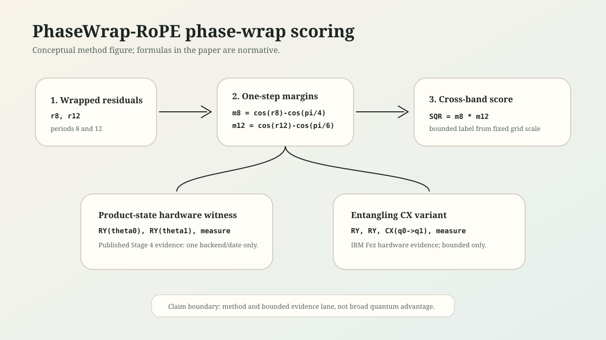
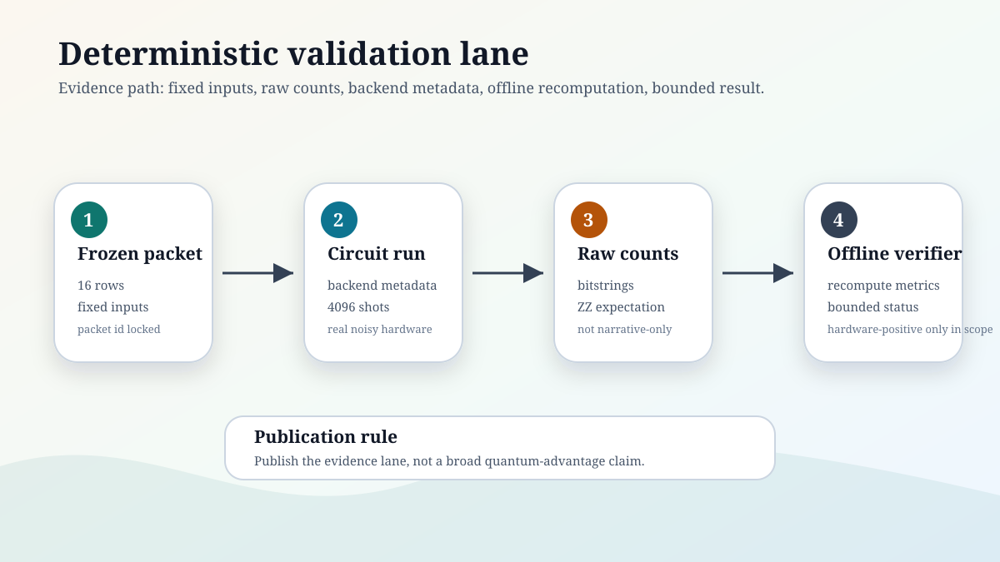
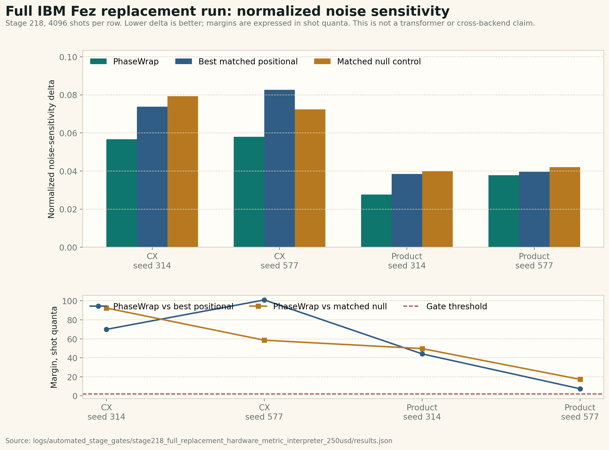

Manuscript status: repository-paper-v2-draft
Public claim posture: bounded, reproducible, evidence-disciplined
Archive DOI: 10.5281/zenodo.20306786
USPTO record note: PhaseWrap-RoPE is patent pending under USPTO provisional applications 64/068,121 and 64/073,899. Public materials identify only application numbers and filing dates; receipt-specific identifiers are retained in internal IP records.
License context: repository software released under AGPL-3.0-only.
PhaseWrap-RoPE is a bounded positional-scoring method based on wrapped phase residuals. Given two integer relative offsets, the method computes residuals in two fixed modular bases, converts those residuals into signed cosine margins, and combines the margins through a cross-band product score denoted SQR in the repository artifacts. This paper describes the scoring rule, the deterministic packet protocol used to audit it, and small two-qubit hardware readouts that recompute the frozen score from raw measurement counts.
The contribution is not a claim of quantum advantage, production transformer improvement, or general cross-backend robustness. Instead, the paper contributes a reproducibility-first evidence lane: frozen packets, fixed shot counts, raw counts, backend metadata, offline recomputation, explicit verifier scripts, and conservative claim boundaries. The current evidence includes a full 4096-shot IBM Fez replacement run across product-state and CX templates, two seeds, and five encoding families; a canonical IBM Fez product-state packet; a completed IBM Fez CX packet; Amazon Braket/Rigetti product-state replication evidence; provider-aware Amazon Braket CX recomputations; classical downstream baselines that identify both the strengths and the limits of the synthetic tasks; a local phase-cued Needle-style retrieval benchmark; and a stricter non-phase-cued retrieval benchmark that exposes the current RoPE-replacement gap.
The strongest supported interpretation is that PhaseWrap-RoPE is a compact, auditable phase-wrap positional scoring rule whose cross-band signal can be preserved in recorded small-circuit hardware readouts and in selected toy downstream diagnostics. In the full IBM Fez replacement run, known-state calibration validates q1q0 bitstring order and the metric gate reports FULL_REPLACEMENT_HARDWARE_POSITIVE_PHASEWRAP_ADVANTAGE: PhaseWrap has lower normalized noise-sensitivity delta than the best matched positional baseline and the matched nonzero null control in all four seed/template comparison groups. Stage 219 adds a bounded RoPE-substitution adequacy gate over Stage 30 and Stage 32 retrieval bridges: PhaseWrap-derived adapters preserve held-out top-1/MRR within the predeclared margin versus RoPE, while RoPE retains stronger probability and calibration. Stages 70-84 preserve broader retrieval failures and show that several support/copy/routing repairs are not PhaseWrap-specific. The current evidence does not establish production transformer superiority, general RoPE replacement, quantum advantage, or broad hardware generalization.
Rotary positional encoding; phase-wrap scoring; positional scoring; deterministic evidence packets; two-qubit readout; reproducible hardware validation; quantum circuit audit.
Transformer models require positional information to distinguish token order in attention. Rotary Position Embedding, or RoPE, introduced a rotation-based way to inject relative-position structure into attention [1,2]. PhaseWrap-RoPE studies a narrower question: can a RoPE-shaped phase-wrap scoring component be stated as a compact rule, frozen into deterministic packets, and audited through both classical baselines and small hardware readouts?
The score itself does not need quantum computation. The default SQR = m8 * m12 feature is closed-form and CPU-exact. The hardware lane is included as a bounded noisy-readout witness and provider-audit probe: it asks whether frozen phase-feature packets, known-state calibration, provider bitstring decoding, raw counts, and offline metric interpretation preserve the predeclared ordering on real devices. It is not an acceleration claim.
This paper should be read as a method-and-evidence paper, not as a full model paper. It does not train a production transformer, does not replace RoPE in a large language model, and does not claim quantum speedup. The aim is to make a small positional scoring rule reviewable: every reported packet should be traceable to input rows, raw measurement counts or deterministic classical outputs, backend metadata where applicable, and an offline verifier.
This paper documents the first public PhaseWrap-RoPE release under Quantyra. The repository is open source under AGPL-3.0-only and references the USPTO submission record summarized in PATENTS.md and docs/publication/patent-status-note-v1.md. The release is designed to permit external review while preserving the claim boundary established by the manuscript-to-provisional support audit.
The paper makes four contributions:
1. A fixed phase-wrap scoring rule. PhaseWrap-RoPE computes two signed residual margins, one in period 8 and one in period 12, and combines them through a cross-band product score. 2. A deterministic evidence protocol. The repository uses frozen rows, fixed shot counts, explicit packet IDs, raw counts, backend metadata, and offline recomputation rather than narrative-only hardware claims. 3. Bounded two-qubit hardware readouts. Product-state and CX readout paths show that the frozen cross-band score can be recomputed from recorded small-circuit hardware artifacts under stated backend/date/calibration conditions. 4. Classical and toy downstream baselines. The repository reports that the original synthetic scoring target is exactly recoverable by simple exposed-feature baselines, then separates that limitation from later toy downstream attention and Needle-style retrieval experiments.
The main scientific value is therefore the evidence discipline and the clarity of the scoring rule. The main scientific limitation is that the strongest claims remain packet-specific and toy-task-specific.
PhaseWrap-RoPE is related to RoPE-style phase behavior, but the present release does not test a full transformer-scale architecture. Its evidence should be interpreted by tier:
| Tier | Evidence class | Supported interpretation | Unsupported interpretation |
|---|---|---|---|
| Formula | Closed scoring rule over integer offsets | SQR = m8 * m12 is well specified and reproducible |
Learned positional representation or broad model improvement |
| Stage 4 hardware | Two-qubit product-state and CX readout packets | Recorded hardware can preserve the frozen score/control ordering under specific packet/backend/date/calibration contexts | Quantum advantage, entanglement advantage, or general backend robustness |
| Stage 188/216-218 full IBM replacement run | IBM Fez full 4096-shot replacement packet over product-state and CX templates, two seeds, five encoding families, known-state calibration, and fixed margin thresholds | PhaseWrap has lower normalized noise-sensitivity delta than the best matched positional baseline and matched null control in all four comparison groups under the stated IBM Fez contexts | Production transformer improvement, RoPE replacement, quantum advantage, or broad cross-backend robustness |
| Stage 5 baselines | Synthetic attention-scoring baseline closure | The original synthetic target is recoverable by mod-24 and direct product-feature baselines | Evidence that the scoring task is nontrivial or production-relevant |
| Stage 6 downstream toy task | Content-plus-position oracle phase-feature sanity check | PhaseWrap-RoPE gives the lowest MAE on one fixed toy packet | Production transformer superiority |
| Stage 7 toy transformer ablation | Four-layer attention-only synthetic length-extrapolation packet | PhaseWrap-RoPE has the best argmax retrieval ranking on one fixed packet | Full transformer-scale validation or better calibration |
| Stage 8 Needle-style benchmark | Local phase-cued synthetic retrieval packet | PhaseWrap-RoPE is worth testing in broader RoPE-facing retrieval settings | RULER result, production transformer result, or proof that PhaseWrap-RoPE replaces RoPE |
| Stage 9 trained positional-attention ablation | Synthetic train-short/test-long phase-cued and exact-offset passkey packets with matched optimizer/seeds | phasewrap_adapter is strongest on the phase-cued packet; rope_relative is strongest on exact-offset passkey |
Full language-model benchmark, production transformer result, or proof that PhaseWrap-RoPE replaces RoPE |
| Stage 10 small decoder-only transformer ablation | Autograd-backed one-block decoder-only transformer on phase-cued retrieval, exact-offset passkey, and tiny text-fact QA lanes | The first full-transformer sanity check is near chance, target probabilities are near uniform, and no meaningful PhaseWrap advantage is shown | Production transformer result, full language-model benchmark, or proof that PhaseWrap-RoPE replaces RoPE |
| Stage 11 score theory | Deterministic invariance, aliasing, period-pair, and Fourier-support analysis | The fixed 8/12 score is a mod-24 periodic feature with unavoidable aliases and exact small classical Fourier support | Proof that 8/12 is globally optimal or that the score improves trained transformers |
| Stage 12 RULER-style retrieval | Deterministic passkey, multi-needle, and aggregation-style local retrieval whose targets are not PhaseWrap-selected | RoPE-like and sinusoidal baselines solve this exact-offset packet; fixed 8/12 PhaseWrap-RoPE does not | Claim that PhaseWrap-RoPE is currently a RoPE replacement |
| Stage 13 positional-adapter benchmark | Train-short/test-long adapters on Stage 12 non-phase-cued retrieval rows | PhaseWrap-plus-distance matches RoPE on held-out top-1/MRR, but RoPE has higher target-probability mass | Production transformer result or proof that PhaseWrap-RoPE replaces RoPE |
| Stage 14 attention-readout benchmark | Key-value attention readout derived from Stage 12 rows | PhaseWrap-plus-distance again matches RoPE on held-out top-1/MRR, but RoPE has higher target value probability | Production transformer result or proof that PhaseWrap-RoPE replaces RoPE |
| Stage 15 learned attention-readout benchmark | One-hidden-layer scorer over Stage 14 positional feature families | PhaseWrap-plus-distance leads held-out top-1/MRR, while RoPE has higher target value probability | Production transformer result or proof that PhaseWrap-RoPE replaces RoPE |
| Stage 16 learned attention stability | Five initialization-seed reruns of Stage 15 | PhaseWrap-plus-distance preserves top-1/MRR leadership across the tested seeds; RoPE has higher target value probability | Production transformer result or proof that PhaseWrap-RoPE replaces RoPE |
| Stage 17 small decoder value model | Learned value embeddings and output projection over Stage 14 rows | All tested methods are near chance in the current compact value-output setup | Production transformer result or proof that PhaseWrap-RoPE replaces RoPE |
| Stage 18 value-output capacity probe | Uniform and teacher-forced target attention through the learned value-output path | Teacher forcing does not substantially improve train or test performance, pointing to value-output capacity/optimization as a bottleneck | Production transformer result or proof that PhaseWrap-RoPE replaces RoPE |
| Stage 19 value-output hardening probe | Teacher-forced target attention with full-batch Adam and larger learned value embeddings | Train fit is solved and held-out value-token retrieval improves, showing the value-output path is improvable | Positional-mechanism comparison, production transformer result, or proof that PhaseWrap-RoPE replaces RoPE |
| Stage 20 hardened positional value model | Learned positional attention with the hardened value-output path over Stage 14 rows | rope_relative is strongest on held-out value-token retrieval; PhaseWrap-plus-distance trails on this packet |
Production transformer result or proof that PhaseWrap-RoPE replaces RoPE |
| Stage 21 hardened positional stability | Five initialization-seed reruns of Stage 20 | rope_relative remains strongest by mean held-out top-1/MRR; PhaseWrap-plus-distance remains behind on MRR |
Production transformer result or proof that PhaseWrap-RoPE replaces RoPE |
| Stage 22 long-context retrieval | Explicit passkey, multi-needle, and aggregation rules through 4096-token contexts | RoPE-like and sinusoidal fixed scoring solve the packet; fixed PhaseWrap 8/12 is weak | Production transformer result or proof that PhaseWrap-RoPE replaces RoPE |
| Stage 23 long-context adapter | Train-short/test-long adapters on Stage 22 rows | PhaseWrap-plus-distance matches RoPE-like top-1/MRR at 4096, while RoPE-like scoring has higher target probability mass | Production transformer result or proof that PhaseWrap-RoPE replaces RoPE |
| Stage 24 long-context value model | Learned value embeddings/output projection on Stage 22 rows | rope_relative is strongest on held-out value retrieval; PhaseWrap-derived adapters trail |
Production transformer result or proof that PhaseWrap-RoPE replaces RoPE |
| Stage 25 long-context value stability | Five initialization-seed reruns of Stage 24 | rope_relative remains strongest by mean held-out top-1/MRR; PhaseWrap-derived adapters trail |
Production transformer result or proof that PhaseWrap-RoPE replaces RoPE |
| Stage 26 compact key-value QA | Explicit content-key retrieval with distractor facts | PhaseWrap-derived adapters match ALiBI-style top-1/MRR on this packet; fixed PhaseWrap scoring remains weak | Production transformer result or proof that PhaseWrap-RoPE replaces RoPE |
| Stage 27 compact key-value transformer bridge | One-hidden-layer attention bridge over Stage 26 candidate features across five model initialization seeds | PhaseWrap-plus-distance ties ALiBI-style top-1/MRR and slightly leads target probability on this compact bridge | Full decoder-only language-model result or proof that PhaseWrap-RoPE replaces RoPE |
| Stage 28 RULER-style attention bridge | One-hidden-layer attention bridge over Stage 12 non-phase-cued retrieval rows across five model initialization seeds | PhaseWrap-plus-distance matches RoPE-like top-1/MRR, while RoPE-like scoring keeps stronger probability and calibration metrics | Full decoder-only language-model result or proof that PhaseWrap-RoPE replaces RoPE |
| Stage 29 period-pair task audit | Stage 11 period-pair grid over local and long-context retrieval rows | Period-pair swaps alone do not solve the fixed-score retrieval gap | Proof of a globally optimal period pair or proof that PhaseWrap-RoPE replaces RoPE |
| Stage 30 matched retrieval bridge | Equal feature-width and parameter-count bridge over Stage 12 non-phase-cued retrieval rows | PhaseWrap-plus-distance matches RoPE-like top-1/MRR under the matched budget, while RoPE-like scoring keeps stronger probability and calibration metrics | Full decoder-only language-model result or proof that PhaseWrap-RoPE replaces RoPE |
| Stage 31 full-context retrieval attention | Learned four-parameter attention over every prefix position on Stage 12 rows | RoPE-like scoring solves the held-out packet; current PhaseWrap variants are weak | Full decoder-only language-model result or proof that PhaseWrap-RoPE replaces RoPE |
| Stage 32 full-context feature bridge | Nonlinear full-prefix feature bridge over Stage 12 rows | PhaseWrap distance/multiscale adapters recover top-1/MRR; RoPE-like scoring keeps stronger probability and calibration metrics | Full decoder-only language-model result or proof that PhaseWrap-RoPE replaces RoPE |
| Stage 219 RoPE-substitution gate | Predeclared adequacy gate over Stage 30 primary and Stage 32 corroborating retrieval bridges | PhaseWrap-derived adapters preserve top-1/MRR within margin versus RoPE with measured probability/calibration degradation | General RoPE replacement, production transformer superiority, or language-model-scale validation |
| Stage 33 temperature calibration audit | Validation-selected post-hoc temperature scaling for the Stage 32 bridge | PhaseWrap-derived adapters keep top-1/MRR and improve probability/ECE; RoPE-like scoring remains strongest on calibrated probability/ECE | Full decoder-only language-model result or proof that PhaseWrap-RoPE replaces RoPE |
| Stage 34 small decoder value bridge | Learned attention, learned value embeddings, and output projection over Stage 14 key-value rows | RoPE-like scoring is strongest; current PhaseWrap-derived adapters trail under the value-output bottleneck | Full decoder-only language-model result or proof that PhaseWrap-RoPE replaces RoPE |
| Stage 35 value-bridge bottleneck diagnostic | Teacher-forced target attention over Stage 14 key-value rows | Value output is partly viable but not solved; learned attention/mechanism selection remains a major bottleneck | Full decoder-only language-model result or proof that PhaseWrap-RoPE replaces RoPE |
| Stage 36 copy-value bridge | Learned attention with copy-style value output over Stage 14 key-value rows | PhaseWrap-derived adapters recover top-1/MRR; RoPE-like scoring keeps stronger target probability mass | Full decoder-only language-model result or proof that PhaseWrap-RoPE replaces RoPE |
| Stage 37 copy-value temperature calibration | Validation-selected post-hoc temperature scaling for the Stage 36 bridge | PhaseWrap-derived adapters keep top-1/MRR and sharply improve target probability; RoPE-like scoring remains strongest on calibrated probability/ECE | Full decoder-only language-model result or proof that PhaseWrap-RoPE replaces RoPE |
| Stage 38 hardened decoder value bridge | Larger learned attention/value-output bridge over Stage 14 key-value rows | All methods fit train, but held-out length generalization still favors RoPE-like scoring over the PhaseWrap-derived adapters | Full decoder-only language-model result or proof that PhaseWrap-RoPE replaces RoPE |
| Stage 39 sequence decoder retrieval | All-prefix sequence-style decoder retrieval over Stage 14 rows | Several methods fit train, but all tested methods collapse on held-out length extrapolation | Full decoder-only language-model result or proof that PhaseWrap-RoPE replaces RoPE |
| Stage 40 sequence length curriculum | All-prefix sequence decoder trained on lengths 128/256/512 and tested on 2048 | Curriculum does not repair length extrapolation; PhaseWrap-derived adapters lead weak 2048-token test rows | Full decoder-only language-model result or proof that PhaseWrap-RoPE replaces RoPE |
| Stage 41 pointer/copy sequence | All-prefix sequence decoder with copy-style value output over observed prefix token IDs | Copy output repairs 2048-token ranking for RoPE-like scoring and PhaseWrap multiscale; RoPE-like scoring remains best calibrated | Full decoder-only language-model result or proof that PhaseWrap-RoPE replaces RoPE |
| Stage 42 trainable pointer-generator sequence | All-prefix sequence decoder with learned copy/vocab mixture | Strong ranking mostly survives, but RoPE-like scoring remains best and the learned generator branch is weak | Full decoder-only language-model result or proof that PhaseWrap-RoPE replaces RoPE |
| Stage 43 generator-hardened pointer sequence | All-prefix sequence decoder with auxiliary generator-target loss | Generator target probability improves, but RoPE-like scoring remains strongest and generator-only top-1 remains weak | Full decoder-only language-model result or proof that PhaseWrap-RoPE replaces RoPE |
| Stage 44 compact-diagnostic plateau audit | Audit over sealed Stage 39-43 compact summaries | Decision is BOUND_COMPACT_DIAGNOSTIC_PLATEAU; compact diagnostics should not broaden the claim boundary |
Full decoder-only language-model result or proof that PhaseWrap-RoPE replaces RoPE |
| Stage 45 matched decoder-only gate | Matched one-block decoder-only gate over Stage 10 tasks | Decision is PROMOTION_NOT_SUPPORTED; the harness remains near chance with near-uniform target probability |
Full decoder-only language-model result or proof that PhaseWrap-RoPE replaces RoPE |
| Stage 46 decoder capacity hardening audit | Longer-training audit for the one-block decoder-only gate | Decision is CAPACITY_NOT_ESTABLISHED; weak PhaseWrap tiny text-fact QA positives remain below capacity threshold |
Full decoder-only language-model result or proof that PhaseWrap-RoPE replaces RoPE |
| Stage 47 Adam decoder generalization audit | Adam optimizer audit for the one-block decoder-only gate | Decision is TRAIN_FIT_WITH_PARTIAL_GENERALIZATION; PhaseWrap leads tiny text-fact QA, but retrieval tasks fail held-out generalization |
Full decoder-only language-model result or proof that PhaseWrap-RoPE replaces RoPE |
| Stage 48 Adam decoder stability audit | Five-seed stability audit for Stage 47 | Tiny text-fact QA remains positive, but the PhaseWrap lead is not stable; retrieval still fails | Full decoder-only language-model result or proof that PhaseWrap-RoPE replaces RoPE |
| Stage 49 copy-decoder retrieval repair audit | Copy-output repair over the Stage 45-48 row family | Exact-offset passkey is repaired for rope_relative, but PhaseWrap does not lead and phase-cued retrieval remains weak |
Free learned value generation, full decoder-only language-model result, or proof that PhaseWrap-RoPE replaces RoPE |
| Stage 50 learned pointer-generator decoder audit | Learned copy/vocab mixture over the Stage 45-49 row family | Tiny text-fact QA remains positive, but the fixed-copy exact-offset repair does not survive learned attention/gating | Learned retrieval generation, full decoder-only language-model result, or proof that PhaseWrap-RoPE replaces RoPE |
| Stage 51 decoder-path plateau audit | Audit over sealed Stage 45-50 decoder-path artifacts | Decision is BOUND_DECODER_PATH_PLATEAU; optimizer and output repairs are bounded diagnostics, not promotion evidence |
Full decoder-only language-model result or proof that PhaseWrap-RoPE replaces RoPE |
| Stage 52 two-block decoder feasibility audit | Stronger two-block residual decoder over the Stage 45-51 row family | Train fit and tiny text-fact QA improve on one seed, but retrieval generalization remains zero | Five-seed promotion evidence, full decoder-only language-model result, or proof that PhaseWrap-RoPE replaces RoPE |
| Stage 53 two-block retrieval hardening audit | More retrieval exposure and training budget for Stage 52 | Held-out retrieval remains zero and tiny text-fact QA weakens | Five-seed promotion evidence, full decoder-only language-model result, or proof that PhaseWrap-RoPE replaces RoPE |
| Stage 54 attention-supervised two-block audit | Target-attention supervision for the Stage 52/53 two-block path | Held-out retrieval target attention and top-1 remain unrepaired | Five-seed promotion evidence, standard free decoder generation, full decoder-only language-model result, or proof that PhaseWrap-RoPE replaces RoPE |
| Stage 55 row-metadata cue-copy upper-bound audit | Explicit target-distance/congruence metadata with copy output | Retrieval is solvable for all methods, including no_position |
Positional-method promotion evidence, standard decoder-only input evidence, or proof that PhaseWrap-RoPE replaces RoPE |
| Stage 56 standard-input cue-copy audit | Visible query-token cue decoding with copy output | Exact-offset is partially repaired for rope_relative, but phase-cued retrieval remains weak |
Learned decoder-only transformer evidence, phase-cued retrieval solution, or proof that PhaseWrap-RoPE replaces RoPE |
| Stage 57 support-aware query-cue audit | Visible query-token cue decoding plus known reference-delta support prior | Phase-cued retrieval is solved for no_position too |
Positional-method promotion evidence, learned support-prior inference, or proof that PhaseWrap-RoPE replaces RoPE |
| Stage 58 pooled-train query support audit | Pooled train lookup from query-token residue to reference delta | The support map is train-recoverable and solves phase-cued retrieval for no_position too |
Positional-method promotion evidence, matched decoder-only transformer evidence, or proof that PhaseWrap-RoPE replaces RoPE |
| Stage 59 seed-local query support audit | Per-seed train lookup from query-token residue to reference delta plus fallback cue decoding | Held-out support coverage is incomplete, fallback cue decoding crosses threshold, and no_position solves too |
Positional-method promotion evidence, matched decoder-only transformer evidence, complete held-out support inference, or proof that PhaseWrap-RoPE replaces RoPE |
| Stage 60 support fallback strictness audit | Compare Stage 59 fallback decoding with strict known-support-only decoding | Phase-cued retrieval crosses threshold only with fallback decoding; strict known-support decoding falls below threshold | Positional-method promotion evidence, matched decoder-only transformer evidence, or proof that fallback is learned decoder behavior |
| Stage 61 support-complete two-block audit | Learned two-block vocab-softmax decoder with complete phase-cued support coverage | Complete support coverage still does not establish learned decoder capacity | Positional-method promotion evidence, matched decoder success, or proof that PhaseWrap-RoPE replaces RoPE |
| Stage 62 long-training support-complete audit | Stage 61 learned decoder with 80 training epochs | Train fit improves but capacity remains below threshold and held-out retrieval remains unrepaired | Positional-method promotion evidence, matched decoder success, longer-training generalization, or proof that PhaseWrap-RoPE replaces RoPE |
| Stage 63 two-block copy-output capacity audit | Stage 62 two-block learned attention with copied prefix-token output | Train capacity is established, but held-out retrieval remains far below threshold | Positional-method promotion evidence, free learned value generation, retrieval generalization, or proof that PhaseWrap-RoPE replaces RoPE |
| Stage 64 two-block pointer-generator capacity audit | Stage 63 attention path with learned copy/vocab output mixture | Train capacity is preserved, but held-out retrieval remains far below threshold | Positional-method promotion evidence, full decoder-only language-model validation, retrieval generalization, or proof that PhaseWrap-RoPE replaces RoPE |
| Stage 65 pointer-generator length-curriculum audit | Stage 64 pointer-generator path trained with added length-40 curriculum rows | Train capacity is preserved and tiny text-fact QA improves, but held-out retrieval remains far below threshold | Positional-method promotion evidence, original train-short/test-long validation, retrieval generalization, or proof that PhaseWrap-RoPE replaces RoPE |
| Stage 66 positional-copy expert audit | Stage 64 pointer-generator path with a direct method-bias copy expert | Train capacity is preserved, but held-out retrieval remains far below threshold | Positional-method promotion evidence, full decoder-only language-model validation, retrieval generalization, or proof that PhaseWrap-RoPE replaces RoPE |
| Stage 67 content-key retrieval audit | Redesigned visible key/value retrieval rows for the Stage 64 pointer-generator path | Held-out retrieval is solved by every tested method, including no_position |
Positional-method promotion evidence, original phase-cued/exact-offset retrieval repair, or proof that PhaseWrap-RoPE replaces RoPE |
| Stage 68 content-key auxiliary transfer audit | Original Stage 10 tasks trained with same-seed Stage 67 content-key auxiliary rows | Train capacity is preserved, but original held-out retrieval remains far below threshold | Positional-method promotion evidence, original retrieval repair, auxiliary-transfer promotion, or proof that PhaseWrap-RoPE replaces RoPE |
| Stage 69 original multitask pointer-generator audit | One same-seed Stage 64 pointer-generator trained across all original Stage 10 tasks | Train capacity is preserved, but original held-out retrieval remains far below threshold | Positional-method promotion evidence, larger decoder-only language-model validation, retrieval generalization, or proof that PhaseWrap-RoPE replaces RoPE |
| Stage 70 strongest honest claim synthesis | Machine-readable synthesis over current fair-comparison artifacts | Decision is BOUND_STRONGEST_HONEST_CLAIM_WITH_RETRIEVAL_FAILURES; compact/auditable evidence and mixed diagnostics are supported, while original retrieval remains unrepaired |
RoPE replacement, positional-method promotion, or proof that diagnostics establish transformer superiority |
| Stage 71 positional-bias copy upper-bound audit | Deterministic argmax copy from each method's own positional bias on original rows | Decision is POSITIONAL_BIAS_COPY_PARTIAL_ORIGINAL_RETRIEVAL_UPPER_BOUND; exact-offset is solved for rope_relative, but phase-cued retrieval remains below threshold |
Learned decoder-only transformer behavior, phase-cued repair, positional-method promotion, or proof that PhaseWrap-RoPE replaces RoPE |
| Stage 72 phase-cued bias tie-support audit | Tie-aware maximum-bias support check on original phase-cued rows | Decision is PHASE_CUED_TARGET_NOT_IN_PHASEWRAP_MAX_BIAS_SUPPORT; PhaseWrap max-bias support misses the held-out phase-cued target |
Learned decoder-only transformer behavior, phase-cued repair, no-position positional evidence, or proof that PhaseWrap-RoPE replaces RoPE |
| Stage 73 phase-cued period-pair support audit | No-training sweep over the predeclared Stage 11 period-pair grid on original phase-cued rows | Decision is PHASE_CUED_PERIOD_PAIR_SWEEP_DOES_NOT_REPAIR_SUPPORT; every tested fixed period pair has held-out target-in-max-support rate 0.000000 |
Replacement period-pair selection, phase-cued repair, post-hoc period-pair promotion, or proof that PhaseWrap-RoPE replaces RoPE |
| Stage 74 leave-one-seed query-support audit | Cross-seed visible query-support lookup from other seeds' train rows | Decision is LEAVE_ONE_SEED_QUERY_SUPPORT_SOLVES_PHASE_CUED_NOT_PROMOTION; phase-cued retrieval reaches 0.900000 top-1 with full support coverage, but no_position solves too |
Positional-method promotion evidence, matched learned decoder evidence, or proof that PhaseWrap-RoPE replaces RoPE |
| Stage 75 learned query-support head audit | Leave-one-seed softmax support head from visible query-token features | Decision is LEARNED_QUERY_SUPPORT_HEAD_SOLVES_PHASE_CUED_NOT_PROMOTION; phase-cued retrieval reaches 0.900000 top-1 with full support-head accuracy, but no_position solves too |
Positional-method promotion evidence, matched decoder-only transformer evidence, or proof that PhaseWrap-RoPE replaces RoPE |
| Stage 76 integrated support copy-head audit | Same-seed support/copy head optimized through token-copy loss | Decision is INTEGRATED_SUPPORT_COPY_HEAD_PARTIAL_RETRIEVAL; exact-offset reaches 0.600000 top-1 for rope_relative, but phase-cued retrieval is 0.000000 for every method |
Phase-cued repair, matched decoder-only transformer evidence, positional-method promotion, or proof that PhaseWrap-RoPE replaces RoPE |
| Stage 77 auxiliary support copy-head audit | Same-seed support/copy head optimized with token-copy loss plus auxiliary support loss | Decision is AUXILIARY_SUPPORT_COPY_HEAD_PARTIAL_RETRIEVAL; exact-offset remains partially repaired for rope_relative, but phase-cued retrieval is still 0.000000 for every method |
Phase-cued repair, matched decoder-only transformer evidence, positional-method promotion, or proof that PhaseWrap-RoPE replaces RoPE |
| Stage 78 support coverage split audit | No-training coverage audit over original phase-cued support rows | Decision is SAME_SEED_SUPPORT_COVERAGE_SPLIT_EXPLAINS_STAGE77_FAILURE; same-seed train coverage is 0.000000, while cross-seed and pooled train coverage are 1.000000 |
Matched decoder-only transformer evidence, positional-method promotion, or proof that PhaseWrap-RoPE replaces RoPE |
| Stage 79 support-complete auxiliary copy-head audit | Same-seed support/copy head with support-complete exposure | Decision is SUPPORT_COMPLETE_AUXILIARY_COPY_HEAD_SUPPORT_RECOVERED_RETRIEVAL_FAILED; support accuracy reaches 1.000000, but best phase-cued retrieval is only 0.016667 top-1 |
Matched decoder-only transformer evidence, positional-method promotion, phase-cued token-retrieval repair, or proof that PhaseWrap-RoPE replaces RoPE |
| Stage 80 support-routed token selector audit | Same-seed support-complete support head routed to farthest-congruent token selection | Decision is SUPPORT_ROUTED_TOKEN_SELECTOR_SOLVES_PHASE_CUED_NOT_PROMOTION; phase-cued retrieval reaches 1.000000 top-1 for every method, including no_position |
Matched decoder-only transformer evidence, positional-method promotion, learned routing, or proof that PhaseWrap-RoPE replaces RoPE |
| Stage 81 soft support-routed token selector audit | Same-seed support-complete support probabilities routed to farthest-congruent token selection | Decision is SOFT_SUPPORT_ROUTED_TOKEN_SELECTOR_SOLVES_PHASE_CUED_NOT_PROMOTION; phase-cued retrieval reaches 1.000000 top-1 for every method, including no_position |
Matched decoder-only transformer evidence, positional-method promotion, learned farthest-congruent routing, or proof that PhaseWrap-RoPE replaces RoPE |
| Stage 82 learned support-routing head audit | Same-seed support-complete support head plus learned routing scales over support-congruence, positional bias, and distance | Decision is LEARNED_SUPPORT_ROUTING_HEAD_SUPPORT_RECOVERED_RETRIEVAL_FAILED; support accuracy is 1.000000, but best phase-cued top-1 is only 0.333333 |
Matched decoder-only transformer evidence, phase-cued repair, positional-method promotion, or proof that PhaseWrap-RoPE replaces RoPE |
| Stage 83 nonlinear support-routing bridge audit | Same-seed support-complete support head plus nonlinear per-position routing over support-congruence, positional bias, distance, and interactions | Decision is NONLINEAR_SUPPORT_ROUTING_BRIDGE_SUPPORT_RECOVERED_RETRIEVAL_FAILED; support accuracy is 1.000000, but best phase-cued top-1 is only 0.283333 |
Matched decoder-only transformer evidence, phase-cued repair, positional-method promotion, or proof that PhaseWrap-RoPE replaces RoPE |
| Stage 84 support-auxiliary pointer-generator audit | Support-complete two-block pointer-generator decoder with an auxiliary support classifier from the decoder query state | Decision is SUPPORT_AUXILIARY_POINTER_GENERATOR_WITHOUT_RETRIEVAL_GENERALIZATION; train capacity is preserved, but best phase-cued top-1 is only 0.016667 |
Production language-model evidence, held-out retrieval repair, positional-method promotion, or proof that PhaseWrap-RoPE replaces RoPE |
The allowed public claims are:
The excluded claims are:
This boundary follows the manuscript-to-provisional support audit and the conservative patent-status note for the USPTO acknowledgement receipt.
Claims should not be promoted beyond the highest tier supported by committed packet, verifier, and artifact records.

Figure 1. PhaseWrap-RoPE phase-wrap scoring schematic. The figure is conceptual; the normative method is the formula block below.
For integer offsets delta_a and delta_b, define a period-specific wrapped phase:
wrap_pi(x) = x shifted by integer multiples of 2*pi into the interval (-pi, pi]
theta_P(delta) = wrap_pi(2*pi*delta/P)
r_P(delta_a, delta_b) = abs(wrap_pi(theta_P(delta_a) - theta_P(delta_b)))The two signed margins used in this release are:
r8 = r_8(delta_a, delta_b)
r12 = r_12(delta_a, delta_b)
m8 = cos(r8) - cos(pi/4)
m12 = cos(r12) - cos(pi/6)The local PhaseWrap-RoPE score is:
SQR = m8 * m12The thresholds are tied to one modular step in each basis. For period 8, one step is 2*pi/8 = pi/4; for period 12, one step is 2*pi/12 = pi/6. Subtracting cos(pi/4) and cos(pi/6) centers each margin at the one-step residual boundary: margins are positive for residuals closer than one modular step, approximately zero at one step, and negative beyond one step.
The period pair 8 and 12 is a fixed first-release design choice rather than a proven optimum. It gives two distinct wrapped residual bases, two different one-step thresholds, and a simple cross-band interaction through the product of signed margins. Other period pairs, learned period schedules, and task-conditioned period selection are intentionally left as future ablation targets.
The repository now includes a deterministic Stage 11 score-theory analysis:
python scripts/run_stage11_phasewrap_theory.pyStage 11 verifies that the default 8/12 score has least common period 24, is invariant under joint translation of both offsets, is invariant when either offset is shifted by 24, and is symmetric under sign reversal of the offset difference. The mod-24 residue table contains 10 distinct score values after mirrored and zero-margin aliases are accounted for. Fourier analysis over the residue table gives positive frequency support [1, 2, 3, 5], so the fixed score is exactly representable as a small classical periodic feature map. This makes the score easier to audit, but it also makes the aliasing limitation explicit.
The implementation normalizes the score for packet labels by clamping:
label = clamp(0.5 + 0.5 * SQR / MAX_ABS_SCORE, 0, 1)where MAX_ABS_SCORE is computed over the fixed delta grid used by the packet generator.
Input: integer offsets delta_a, delta_b
Output: signed score SQR and normalized label
for P in {8, 12}:
theta_a[P] = wrap_pi(2*pi*delta_a/P)
theta_b[P] = wrap_pi(2*pi*delta_b/P)
r[P] = abs(wrap_pi(theta_a[P] - theta_b[P]))
m8 = cos(r[8]) - cos(pi/4)
m12 = cos(r[12]) - cos(pi/6)
SQR = m8 * m12
label = clamp(0.5 + 0.5*SQR/MAX_ABS_SCORE, 0, 1)The product-state witness normalizes the margins into Z targets:
z0 = clamp(m8 / MAX_ABS_M8, -1, 1)
z1 = clamp(m12 / MAX_ABS_M12, -1, 1)
theta_0 = arccos(z0)
theta_1 = arccos(z1)The circuit prepares each qubit with a Y-axis rotation using theta_0 and theta_1, measures computational-basis counts, and estimates E[Z0], E[Z1], and E[Z0 Z1]. The Stage 4 packet uses the two_qubit_zz_expectation_phase_wrap_v1 family.
The original Stage 4 circuit is a product-state angle-encoding/readout witness. It contains no entangling gate. Consequently, the measured E[Z0 Z1] term should be understood as a hardware readout of the cross-band product induced by independently encoded margins, not as evidence of entanglement, quantum speedup, or nonclassical interference. The CPU-computable m8*m12 score remains the reference object; the circuit is a noisy-device witness for that object.
The repository now includes an opt-in entangling CX witness family:
two_qubit_cx_parity_phase_wrap_v2This variant applies CX(q0 -> q1) after the two RY margin encodings. In the ideal circuit, the target-qubit Z expectation after CX carries the cross-band parity/product signal. The corresponding witness and control scores are:
witness_cx = clamp(0.5 + 0.5 * score_scale * E[Z1 after CX], 0, 1)
control_cx = clamp(0.5 + 0.25 * (E[Z0 after CX] + E[Z0 Z1 after CX]), 0, 1)This variant has a completed IBM Fez hardware-positive artifact in the active public sweep. It also has completed Amazon Braket artifacts on Rigetti Cepheus, IQM Garnet, and IQM Emerald that verify as hardware-positive under manifest-declared q0q1 Amazon Braket bitstring decoding. The earlier generic q1q0 decode classified those Braket CX records as negative; the diagnostic remains as audit evidence for that correction. The positive claim remains bounded to recorded packet/backend/date/calibration-specific results and does not establish entanglement advantage, quantum advantage, or cross-backend robustness.
The CX witness should be read pragmatically. It checks whether the same frozen signal survives an entangling readout path; it does not establish entanglement advantage or quantum advantage.
Implementation reference: src/qrope/automated_stage_gates.py.
The repository also includes a deterministic Stage 5 attention-scoring baseline suite:
python scripts/run_stage5_attention_baselines.pyThis suite compares the phase-wrap score against a 24-way lookup on (reference_delta - candidate_delta) mod 24, a direct m8/m12/m8*m12 feature baseline, a shallow regression tree on exposed deltas, and RoPE-style, sinusoidal, and ALiBI-style scoring rules. On the current synthetic task, the mod-24 lookup and direct product-feature baselines recover the label exactly. This is a motivation constraint, not a success claim: it closes a baseline gap while showing that the original scoring target is not a hard classical learning problem and does not justify quantum computation.
The repository further includes a deterministic Stage 6 toy downstream attention benchmark:
python scripts/run_stage6_downstream_attention.pyStage 6 mixes token/content compatibility with phase-wrap positional signal. The resulting target is not exactly recovered by mod-24 lookup or direct m8/m12/m8*m12 features alone. Because the PhaseWrap model sees the normalized phase label directly, Stage 6 is best read as an oracle phase-feature sanity check. On the fixed packet, phasewrap_rope_attention has the lowest MAE against RoPE, ALiBI, sinusoidal, no-position, mod-24 lookup, and classical phase-feature baselines. This is bounded toy evidence only.
The repository also includes a deterministic Stage 7 toy transformer ablation:
python scripts/run_stage7_toy_transformer_ablation.pyStage 7 tests a four-layer attention-only toy transformer ablation on one synthetic length-extrapolation retrieval packet. The reported result supports continued investigation in transformer-adjacent settings, but it remains a toy result. The PhaseWrap variant has the best argmax retrieval ranking by top-1 and MRR on the fixed packet; it does not have the best target-probability calibration. It does not establish production transformer superiority.
The repository also includes a deterministic Stage 8 local Needle-style benchmark:
python scripts/run_stage8_needle_benchmark.pyStage 8 compares PhaseWrap-RoPE against RoPE-like, ALiBI-like, sinusoidal, and no-position scoring rules on a phase-cued synthetic retrieval packet with five seeds, context lengths up to 1024, row-bootstrap intervals, and a period-pair ablation. On this packet, phasewrap_rope_8_12 has top-1 1.0 and MRR 1.0, and the (8, 12) period pair is best among the tested pairs. This supports keeping the RoPE-facing replacement research lane open, but it is not a RULER benchmark, a trained language-model benchmark, or a proof that the method replaces RoPE.
The repository also includes the first executable Stage 9 trained positional-attention ablation:
python scripts/run_stage9_trained_transformer_ablation.pyStage 9 trains matched decoder-style positional attention mechanisms across five seeds, short training contexts, and longer test contexts. The current synthetic packets compare phasewrap_bias, phasewrap_adapter, rope_relative, alibi, sinusoidal, and no_position. On the phase-cued packet, phasewrap_adapter has mean test top-1 0.668750 and mean test MRR 0.745096, with no failed runs. On the exact-offset passkey packet, whose target is not selected by the PhaseWrap score, rope_relative has mean test top-1 1.000000, mean test MRR 1.000000, and lower mean test loss than phasewrap_adapter. This is a trained positional-attention result, not a full language-model benchmark.
The repository also includes a Stage 10 small decoder-only transformer ablation:
python scripts/run_stage10_small_decoder_transformer.pyStage 10 trains a very small one-block decoder-only single-head transformer with token embeddings, query/key/value projections, an output projection, and a positional scale. The tested variants use matched seeds, tasks, model shape, optimizer, and epochs. The task set includes phase-cued retrieval, exact-offset passkey retrieval, and a tiny curated text-fact QA lane. The current result is near chance across the tested lanes, with target probabilities near uniform (~0.007813); the regenerated artifact also reports target-probability MAE, top-1 confidence, and expected calibration error. The included capacity probe does not show strong training-set fit. It is therefore reported as a negative or inconclusive first full-transformer sanity check rather than as a PhaseWrap advantage.
The repository also includes a deterministic Stage 12 RULER-style retrieval benchmark:
python scripts/run_stage12_ruler_retrieval.pyStage 12 uses passkey, multi-needle, and aggregation-style retrieval rows whose targets are selected by explicit task rules and RNG offsets rather than by the PhaseWrap score. On this packet, sinusoidal and rope_relative have top-1 1.000000 and MRR 1.000000; phasewrap_rope_8_12 has top-1 0.020833 and MRR 0.156865. The PhaseWrap oracle target-overlap diagnostic is 0.020833, confirming that the packet is not phase-cued. This is useful negative evidence: the fixed 8/12 score is not sufficient for exact-offset retrieval, and a stronger PhaseWrap positional mechanism is needed before any RoPE-replacement claim.
The repository also includes a deterministic Stage 13 positional-adapter benchmark:
python scripts/run_stage13_positional_adapter.pyStage 13 trains lightweight positional adapters on Stage 12 rows with short contexts and evaluates on held-out length-1024 rows. The fixed phasewrap_score remains weak with top-1 0.016667 and MRR 0.080860. The phasewrap_residual_adapter improves to top-1 0.450000 and MRR 0.673611. The phasewrap_distance_adapter reaches top-1 1.000000 and MRR 1.000000, matching rope_relative on argmax ranking, while rope_relative has higher mean target-probability mass (0.821549 versus 0.429105). This supports the next mechanism direction: PhaseWrap-derived features need explicit distance or comparable positional information for exact-offset retrieval.
The repository also includes a deterministic Stage 14 attention-readout benchmark:
python scripts/run_stage14_attention_readout.pyStage 14 converts the Stage 12 non-phase-cued rows into key-value attention-readout rows. It evaluates whether the positional mechanism recovers target value tokens, not just target positions. The result preserves the Stage 13 pattern: phasewrap_distance_adapter reaches top-1 1.000000 and MRR 1.000000, matching rope_relative; rope_relative has higher mean target value probability (0.824888 versus 0.432405). This is stronger evidence for a candidate adapter shape, but it is still not a full transformer benchmark.
The repository also includes a deterministic Stage 15 learned attention-readout benchmark:
python scripts/run_stage15_learned_attention.pyStage 15 trains a one-hidden-layer scorer over each positional feature family on the Stage 14 key-value rows. On the held-out length-1024 rows, phasewrap_distance_adapter has top-1 1.000000, MRR 1.000000, and mean target value probability 0.516181. rope_relative has top-1 0.933333, MRR 0.966667, and higher mean target value probability 0.678210. This is the strongest local ranking evidence so far for the PhaseWrap-plus-distance adapter shape, while still falling short of a full transformer or production-language-model claim.
The repository also includes a deterministic Stage 16 learned attention stability benchmark:
python scripts/run_stage16_learned_attention_stability.pyStage 16 reruns the Stage 15 learned attention-readout benchmark across five deterministic initialization seeds. phasewrap_distance_adapter has mean top-1 1.000000, top-1 min-max 1.000000-1.000000, mean MRR 1.000000, and mean target value probability 0.522507. rope_relative has mean top-1 0.983333, top-1 min-max 0.933333-1.000000, mean MRR 0.991667, and higher mean target value probability 0.706780. This strengthens the local ranking evidence while preserving the calibration caveat.
The repository also includes a deterministic Stage 17 small decoder value-model benchmark:
python scripts/run_stage17_small_decoder_value_model.pyStage 17 adds learned value embeddings and a learned output projection to the Stage 14 key-value rows. The result is near chance for every tested positional method: phasewrap_distance_adapter has top-1 0.016667, MRR 0.035684, and mean target value probability 0.005179; rope_relative has top-1 0.016667, MRR 0.035220, and mean target value probability 0.005179. This is negative evidence for the current compact decoder-style value-output setup and indicates that optimization/capacity hardening is needed before the adapter can be interpreted inside a stronger transformer.
The repository also includes a deterministic Stage 18 value-output capacity probe:
python scripts/run_stage18_value_output_capacity.pyStage 18 compares uniform attention with teacher-forced target attention through the same learned value embeddings and output projection used to diagnose Stage 17. On the held-out test rows, uniform_attention has top-1 0.016667, MRR 0.034671, and mean target value probability 0.005182; teacher_forced_attention has top-1 0.016667, MRR 0.041872, and mean target value probability 0.005308. Teacher forcing improves MRR slightly but does not substantially fix train or test performance, so the next transformer-style experiment should harden the learned value-output path before drawing conclusions about positional mechanisms.
The repository also includes a deterministic Stage 19 value-output hardening probe:
python scripts/run_stage19_value_output_hardening.pyStage 19 keeps attention teacher-forced and changes the value-output path to full-batch Adam with larger learned value embeddings. The best held-out result by top-1/MRR is adam_embed12, with train top-1 1.000000, train MRR 1.000000, test top-1 0.533333, test MRR 0.552776, and test mean target value probability 0.480821. This shows that the Stage 17/18 value-output bottleneck is improvable. It does not compare PhaseWrap against RoPE because positional attention is bypassed.
The repository also includes a deterministic Stage 20 hardened positional value-model benchmark:
python scripts/run_stage20_hardened_positional_value_model.pyStage 20 reintroduces learned positional attention while keeping the hardened value-output path. All methods fit the training rows, but held-out value-token retrieval favors rope_relative: top-1 0.383333, MRR 0.429275, and mean target value probability 0.350653. phasewrap_distance_adapter has top-1 0.250000, MRR 0.321470, and mean target value probability 0.193673; the fixed phasewrap_score has top-1 0.000000 and MRR 0.032774. This is negative/mixed evidence for the current PhaseWrap adapter on the non-phase-cued packet, not evidence that PhaseWrap-RoPE replaces RoPE.
The repository also includes a deterministic Stage 21 hardened positional stability benchmark:
python scripts/run_stage21_hardened_positional_stability.pyStage 21 reruns Stage 20 across five learned-parameter initialization seeds. rope_relative remains strongest with mean top-1 0.376666, top-1 range 0.350000-0.383333, mean MRR 0.421212, and mean target value probability 0.351668. phasewrap_distance_adapter has mean top-1 0.286667, top-1 range 0.250000-0.316667, mean MRR 0.339284, and mean target value probability 0.205887. This stabilizes the Stage 20 negative/mixed result for the current non-phase-cued packet.
The repository also includes a deterministic Stage 22 long-context retrieval benchmark:
python scripts/run_stage22_long_context_retrieval.pyStage 22 extends the Stage 12 explicit passkey, multi-needle, and aggregation retrieval rules to contexts 512, 1024, 2048, and 4096. On 240 rows, sinusoidal and rope_relative both have top-1 1.000000 and MRR 1.000000. Fixed phasewrap_rope_8_12 has top-1 0.012500, MRR 0.096153, and mean target probability mass 0.021593. This strengthens the evidence that the fixed 8/12 score is not sufficient for non-phase-cued exact retrieval.
The repository also includes a deterministic Stage 23 long-context adapter benchmark:
python scripts/run_stage23_long_context_adapter.pyStage 23 trains positional adapters on the Stage 22 rows with train lengths 512/1024, validation length 2048, and test length 4096. On the held-out 4096 rows, phasewrap_distance_adapter has top-1 1.000000, MRR 1.000000, and mean target probability mass 0.600201, matching rope_relative on top-1/MRR. rope_relative has higher mean target probability mass 0.910440. This supports the trained adapter direction while preserving the calibration gap.
The repository also includes a deterministic Stage 24 long-context value-model benchmark:
python scripts/run_stage24_long_context_value_model.pyStage 24 adds learned value embeddings and output projection to the Stage 22 long-context rows. All methods fit the training rows at top-1 1.000000 and MRR 1.000000, but held-out 4096 token value retrieval favors rope_relative with top-1 0.350000, MRR 0.399642, and mean target value probability 0.362745. The strongest PhaseWrap-derived method is phasewrap_residual_adapter, with top-1 0.133333, MRR 0.221899, and mean target value probability 0.118677. This is negative/mixed evidence for the current PhaseWrap-derived value-model path.
The repository also includes a deterministic Stage 25 long-context value-model stability benchmark:
python scripts/run_stage25_long_context_value_stability.pyStage 25 reruns Stage 24 across five learned-parameter initialization seeds. rope_relative remains strongest with mean top-1 0.383333, mean MRR 0.426498, and mean target value probability 0.362492. The strongest PhaseWrap-derived method is phasewrap_residual_adapter, with mean top-1 0.073333, mean MRR 0.120739, and mean target value probability 0.055600. This confirms the Stage 24 held-out ordering across the tested seeds.
The repository also includes a deterministic Stage 26 compact key-value QA retrieval benchmark:
python scripts/run_stage26_compact_kv_qa.pyStage 26 adds explicit content keys and distractor facts. On held-out 2048 token rows, alibi, phasewrap_residual_adapter, and phasewrap_distance_adapter each have top-1 0.950000 and MRR 0.975000; phasewrap_distance_adapter has the highest mean target probability among those tied methods at 0.767915. rope_relative has top-1 0.500000 and MRR 0.716667 on this packet, while the fixed phasewrap_score remains weak with top-1 0.300000 and MRR 0.608333. This is constructive compact-retrieval evidence, not full transformer evidence.
The repository also includes a deterministic Stage 27 compact key-value transformer-bridge benchmark:
python scripts/run_stage27_compact_kv_transformer_bridge.pyStage 27 trains a one-hidden-layer attention bridge over the Stage 26 candidate features across five model initialization seeds. On held-out 2048 token rows, phasewrap_distance_adapter and alibi tie at mean top-1 0.950000 and mean MRR 0.975000; phasewrap_distance_adapter has slightly higher mean target probability (0.823006 versus 0.821886). phasewrap_residual_adapter follows with mean top-1 0.920000 and mean MRR 0.960000; rope_relative has mean top-1 0.320000 and mean MRR 0.541381. This is a compact bridge toward the roadmap, not a full decoder-only language-model benchmark.
The repository also includes a deterministic Stage 28 RULER-style attention-bridge benchmark:
python scripts/run_stage28_ruler_attention_bridge.pyStage 28 trains a one-hidden-layer attention bridge directly on Stage 12 non-phase-cued passkey, multi-needle, and aggregation-style retrieval rows across five model initialization seeds. phasewrap_distance_adapter and rope_relative both reach mean top-1 1.000000 and mean MRR 1.000000; rope_relative keeps higher mean target probability (0.704867 versus 0.518441) and lower top-1 expected calibration error (0.297454 versus 0.486407). This is compact retrieval-bridge evidence, not a full decoder-only language-model benchmark.
The repository also includes a deterministic Stage 29 period-pair task audit:
python scripts/run_stage29_period_pair_task_audit.pyStage 29 evaluates the Stage 11 period-pair grid on Stage 12 local and Stage 22 long-context retrieval rows. No tested fixed period pair solves the non-phase-cued packets. The best local top-1 is 8/24 at 0.045833; the default 8/12 local top-1 is 0.020833. The best long-context top-1 is 9/15 at 0.016667; default 8/12 long top-1 is 0.012500. This supports the adapter/transformer direction rather than a claim that another fixed period pair is enough.
The repository also includes a deterministic Stage 30 matched retrieval-bridge benchmark:
python scripts/run_stage30_matched_retrieval_bridge.pyStage 30 reruns the Stage 28 non-phase-cued retrieval bridge while equalizing feature width, hidden width, learned parameter count, optimizer, epochs, and model initialization count across positional variants. Every method uses feature width 12, hidden width 10, and learned parameter count 141. On held-out Stage 12 rows, phasewrap_distance_adapter and rope_relative both reach mean top-1 1.000000 and mean MRR 1.000000; rope_relative keeps higher mean target probability (0.744078 versus 0.564161) and lower expected calibration error (0.260653 versus 0.446620). This removes one compact-bridge confound from Stage 28, but it remains a retrieval bridge rather than a full decoder-only language-model benchmark.
The repository also includes a deterministic Stage 31 full-context retrieval-attention benchmark:
python scripts/run_stage31_full_context_retrieval_attention.pyStage 31 trains the same four attention parameters for each positional variant while every prefix position competes. This is harder than the candidate-only Stage 30 bridge. On held-out Stage 12 rows, rope_relative reaches mean top-1 1.000000, mean MRR 1.000000, and mean target probability 0.821104. The current PhaseWrap variants are weak: phasewrap_bias has mean top-1 0.016667, and phasewrap_distance_adapter has mean top-1 0.000000. This is negative evidence for the current PhaseWrap variants under a stricter full-prefix retrieval-attention harness.
The repository also includes a deterministic Stage 32 full-context feature-bridge benchmark:
python scripts/run_stage32_full_context_feature_bridge.pyStage 32 keeps the Stage 31 full-prefix setting but replaces the four-parameter attention rule with a one-hidden-layer feature bridge. Every method uses feature width 12, hidden width 10, learned parameter count 141, and five model seeds. rope_relative, phasewrap_distance_adapter, and phasewrap_multiscale_adapter all reach mean top-1 1.000000 and mean MRR 1.000000; rope_relative keeps higher mean target probability (0.713026 versus 0.480310 for multiscale and 0.429075 for distance) and lower expected calibration error. This is constructive mechanism evidence, not a RoPE replacement claim.

Figure 2. Deterministic validation lane. The verification path is designed to recompute metrics from frozen packet files and execution records.
The validation protocol is designed around reproducibility rather than opportunistic metric selection. A valid evidence packet should include:
For the Stage 4 packet, the verifier entry point is:
python scripts/verify_stage4_hardware_packet.pyFor the Stage 4 hardware sweep manifest, the verifier entry point is:
python scripts/verify_stage4_hardware_sweep.pyFor the Stage 4 local classical recomputation cost estimate, the entry point is:
python scripts/estimate_stage4_classical_compute_cost.pyFor preregistering future Stage 4 replication packet sets without hardware submission, the entry point is:
python scripts/preregister_stage4_replication_packets.pyFor preparing provider bitstring calibration specs and checking whether real calibration counts are present, the entry points are:
python scripts/prepare_stage4_bitstring_calibration_packets.py
python scripts/verify_stage4_bitstring_calibration.pyThe sweep verifier recomputes metrics only for active completed records whose packet, execution, evaluation, and summary artifacts are present. Deferred or unavailable targets are documented in the manifest but are not treated as required verifier records.
The default verifier inputs are:
logs/automated_stage_gates/stage4_hardware_packet/frozen_packet.jsonlogs/automated_stage_gates/stage4_hardware_packet/execution.jsonlogs/automated_stage_gates/stage4_hardware_packet/evaluation.jsonlogs/automated_stage_gates/stage4_hardware_packet/summary.jsonThe default single-packet path is the reviewer convenience path. The same IBM Fez 2026-05-17 product-state pass is also preserved as the immutable named run:
logs/automated_stage_gates/stage4_hardware_packet_ibm_fez_20260517_pass/frozen_packet.jsonlogs/automated_stage_gates/stage4_hardware_packet_ibm_fez_20260517_pass/execution.jsonlogs/automated_stage_gates/stage4_hardware_packet_ibm_fez_20260517_pass/evaluation.jsonlogs/automated_stage_gates/stage4_hardware_packet_ibm_fez_20260517_pass/summary.jsonlogs/automated_stage_gates/stage4_hardware_packet_ibm_fez_20260517_pass/offline_verification.jsonThe default verifier output is:
logs/automated_stage_gates/stage4_hardware_packet/offline_verification.jsonIBM Quantum Runtime primitives provide the execution model used by the hardware lane: Sampler samples circuit output registers, while IBM backend documentation describes dynamic backend properties and calibration metadata that can change over time [3-5].
This verifier supports recomputation, not independent replication. Recomputing the saved packet verifies that the reported metrics follow from the published raw counts and metadata. Replication requires a new execution of the same frozen packet, preferably across additional dates and backends.
The active Stage 4 hardware sweep includes six completed records: the original IBM Fez product-state hardware packet, an IBM Fez CX hardware-positive packet, an Amazon Braket/Rigetti product-state hardware-positive replication artifact, and Amazon Braket CX artifacts on Rigetti Cepheus, IQM Garnet, and IQM Emerald. The Braket CX artifacts verify as hardware-positive under the provider-aware sweep verifier, which decodes Amazon Braket result keys as q0q1; the earlier generic q1q0 classification is retained only as diagnostic audit context. The later full replacement evidence path, Stages 216-218, adds a separate IBM Fez 4096-shot all-lane comparison across product-state and CX templates, seeds 314 and 577, and five encoding families. IonQ is not an active sweep record: the current intended route is Amazon Braket, and a read-only Braket check on 2026-05-19 found Forte-1 and Forte-Enterprise-1 OFFLINE and Aria-1 RETIRED, so no IonQ hardware task was submitted.
The canonical fully enumerated product-state run is the IBM Fez packet:
| Field | Value |
|---|---|
| Provider | ibm_runtime |
| Backend | ibm_fez |
| Job ID | d84jbq00bvlc73d4krr0 |
| Packet ID | qrope-hardware-73c61893576297ff |
| Rows | 16 |
| Shots per row | 4096 |
| Submitted UTC | 2026-05-17T03:28:38Z |
| Completed UTC | 2026-05-17T03:29:05Z |
| Calibration metadata captured | yes |
| Backend qubits in captured metadata | 156 |
| Witness MAE | 0.018382 |
| Witness rank correlation | 0.876558 |
| Control MAE | 0.217262 |
| Control rank correlation | -0.176940 |
| Outcome | hardware-positive |
The active sweep records also include:
| Record class | Backend/context | Shots | Status in paper |
|---|---|---|---|
| Product-state canonical packet | IBM Fez | 4096 | completed, hardware-positive |
| CX packet | IBM Fez | 4096 | completed, hardware-positive artifact |
| Product-state replication | Amazon Braket/Rigetti | 1000 | completed, machine-verifiable sweep evidence |
| CX provider-aware records | Rigetti Cepheus, IQM Garnet, IQM Emerald | 1000 per row | completed under manifest-declared q0q1 Braket decoding |
| IonQ via Amazon Braket | Forte/Aria route | not submitted | unavailable/not-run in current check |
| Additional IBM targets | deferred | not promoted | not active public evidence until full artifacts are committed |
The machine-verifiable active sweep table is:
| Backend | Provider | Family | Shots | Rows | Witness MAE | Witness rank corr | Control MAE | Control rank corr | Outcome |
|---|---|---|---|---|---|---|---|---|---|
| IBM Fez | ibm_runtime |
two_qubit_zz_expectation_phase_wrap_v1 |
4096 | 16 | 0.018382 | 0.876558 | 0.217262 | -0.176940 | hardware-positive |
| Rigetti Cepheus-1-108Q | amazon_braket |
two_qubit_zz_expectation_phase_wrap_v1 |
1000 | 8 | 0.069901 | 0.786644 | 0.149995 | 0.121232 | hardware-positive |
| IBM Fez | ibm_runtime |
two_qubit_cx_parity_phase_wrap_v2 |
4096 | 16 | 0.021458 | 0.972455 | 0.212516 | -0.169318 | hardware-positive |
| Rigetti Cepheus-1-108Q | amazon_braket |
two_qubit_cx_parity_phase_wrap_v2 |
1000 | 8 | 0.061643 | 0.557668 | 0.194370 | -0.060616 | hardware-positive |
| IQM Garnet | amazon_braket |
two_qubit_cx_parity_phase_wrap_v2 |
1000 | 8 | 0.021719 | 0.981981 | 0.204370 | -0.060616 | hardware-positive |
| IQM Emerald | amazon_braket |
two_qubit_cx_parity_phase_wrap_v2 |
1000 | 8 | 0.021479 | 0.884995 | 0.210995 | -0.096986 | hardware-positive |
The Amazon Braket CX records require provider-aware bitstring handling. Under manifest-declared q0q1 decoding, the records verify as hardware-positive. The earlier generic q1q0 classification remains diagnostic audit evidence for why provider-specific result-key conventions matter.
Do not compress the active sweep into a broad cross-backend robustness result. The appropriate claim is narrower: recorded IBM Fez and Amazon Braket artifacts preserve the witness/control ordering under their stated packet, backend, date, shot, decoding, and calibration conditions.
Stages 216-218 evaluate the full 4096-shot replacement packet that was promoted after the reduced-scope hardware result. The execution package contains 20 packet templates: product-state and CX circuit families, seeds 314 and 577, and five encoding families (phasewrap, rope_like, sinusoidal_like, alibi_like, and matched_nonzero_null_control). It also contains a four-state known-state calibration template. Provider counts were collected across the original IBM instance and an allocated IBM instance, then merged into a single Stage216 artifact with 21/21 templates.
The known-state calibration gate validates a unique q1q0 bitstring order. Each calibration state exceeds the Wilson 95% lower-bound threshold of 0.80 under that order:
| State | Expected key under q1q0 |
Dominant fraction | Wilson 95% lower bound |
|---|---|---|---|
00 |
00 |
0.959 | 0.944852 |
01 |
10 |
0.949 | 0.933564 |
10 |
01 |
0.960 | 0.945990 |
11 |
11 |
0.934 | 0.916890 |
The full metric gate then applies the same fixed margin policy used by the reduced-scope interpretation, scaled by the 4096-shot packet. The decision is FULL_REPLACEMENT_HARDWARE_POSITIVE_PHASEWRAP_ADVANTAGE. PhaseWrap has lower normalized noise-sensitivity delta than the best matched positional baseline and the matched nonzero null control in all four comparison groups:
| Source lane | Circuit template | PhaseWrap delta | Best positional delta | Matched null delta | Positional margin, shot quanta | Null margin, shot quanta |
|---|---|---|---|---|---|---|
ibm_cx_seed314_rows16_shots4096 |
CX parity | 0.056686 | 0.073770 | 0.079248 | 69.976037 | 92.414320 |
ibm_cx_seed577_rows16_shots4096 |
CX parity | 0.058017 | 0.082664 | 0.072316 | 100.953134 | 58.566817 |
ibm_product_seed314_rows16_shots4096 |
Product state | 0.027709 | 0.038480 | 0.039844 | 44.116726 | 49.705471 |
ibm_product_seed577_rows16_shots4096 |
Product state | 0.037817 | 0.039628 | 0.042044 | 7.418207 | 17.313848 |
Both seed pairs satisfy the full-run gate with two stable templates per seed pair. The minimum positional margin is 44.116726 shot quanta for seed 314 and 7.418207 shot quanta for seed 577; the minimum matched-null margin is 49.705471 and 17.313848, respectively. This is hardware-positive evidence for the fixed two-qubit replacement packet, not a transformer result or a general claim about all noisy quantum hardware.

Figure 3. Full IBM Fez replacement hardware metrics from Stage 218. Lower normalized noise-sensitivity delta is better; the lower panel shows shot-quanta margins over the best matched positional baseline and matched nonzero null control.
The corresponding publication figure file is docs/publication/figures/qrope-full-replacement-metrics-v1.png.
The control condition is the additive single-band readout baseline:
control = clamp(0.5 + 0.25 * (E[Z0] + E[Z1]), 0, 1)The witness condition uses the cross-band product readout:
witness = clamp(0.5 + 0.5 * score_scale * E[Z0 Z1], 0, 1)The completed IBM Fez and Braket/Rigetti product-state records support the Stage 4 packet outcome under the recorded conditions. The completed Braket CX records support bounded provider-aware recomputation for their recorded packet/backend/date/calibration contexts. They do not support a general CX cross-backend claim. Backend calibration, queue conditions, transpilation details, result-key conventions, and packet composition can affect replication results. The result therefore remains scoped to the stated packet, backend, date, calibration window, and metrics.
The Stage 5 attention-scoring baseline artifacts are:
logs/automated_stage_gates/stage5_attention_baselines/manifest.jsonlogs/automated_stage_gates/stage5_attention_baselines/results.jsonlogs/automated_stage_gates/stage5_attention_baselines/summary.csvThe Stage 6 toy downstream attention artifacts are:
logs/automated_stage_gates/stage6_downstream_attention/manifest.jsonlogs/automated_stage_gates/stage6_downstream_attention/results.jsonlogs/automated_stage_gates/stage6_downstream_attention/summary.csvThe Stage 7 toy transformer ablation artifacts are:
logs/automated_stage_gates/stage7_toy_transformer_ablation/manifest.jsonlogs/automated_stage_gates/stage7_toy_transformer_ablation/results.jsonlogs/automated_stage_gates/stage7_toy_transformer_ablation/summary.csvlogs/automated_stage_gates/stage7_toy_transformer_ablation/calibration_summary.csvThe Stage 8 local Needle-style benchmark artifacts are:
logs/automated_stage_gates/stage8_needle_benchmark/manifest.jsonlogs/automated_stage_gates/stage8_needle_benchmark/results.jsonlogs/automated_stage_gates/stage8_needle_benchmark/summary.csvlogs/automated_stage_gates/stage8_needle_benchmark/period_pair_ablation.csvThe Stage 9 trained positional-attention artifacts are:
logs/automated_stage_gates/stage9_trained_transformer_ablation/manifest.jsonlogs/automated_stage_gates/stage9_trained_transformer_ablation/results.jsonlogs/automated_stage_gates/stage9_trained_transformer_ablation/summary.csvlogs/automated_stage_gates/stage9_trained_transformer_ablation/per_seed_results.csvlogs/automated_stage_gates/stage9_trained_transformer_ablation/failed_runs.jsonThe Stage 10 small decoder-only transformer artifacts are:
logs/automated_stage_gates/stage10_small_decoder_transformer/manifest.jsonlogs/automated_stage_gates/stage10_small_decoder_transformer/results.jsonlogs/automated_stage_gates/stage10_small_decoder_transformer/summary.csvlogs/automated_stage_gates/stage10_small_decoder_transformer/per_seed_results.csvlogs/automated_stage_gates/stage10_small_decoder_transformer/failed_runs.jsonThe Stage 4 classical recomputation cost artifacts are:
logs/automated_stage_gates/stage4_classical_compute_cost/manifest.jsonlogs/automated_stage_gates/stage4_classical_compute_cost/results.jsonlogs/automated_stage_gates/stage4_classical_compute_cost/summary.csvThe Stage 4 preregistered replication packet artifacts are:
logs/automated_stage_gates/stage4_preregistered_replication_packets/manifest.jsonlogs/automated_stage_gates/stage4_preregistered_replication_packets/ibm_product_seed314_rows16_shots4096.jsonlogs/automated_stage_gates/stage4_preregistered_replication_packets/ibm_cx_seed314_rows16_shots4096.jsonlogs/automated_stage_gates/stage4_preregistered_replication_packets/braket_product_seed2718_rows8_shots1000.jsonlogs/automated_stage_gates/stage4_preregistered_replication_packets/braket_cx_seed2718_rows8_shots1000.jsonThe Stage 4 bitstring calibration planning artifacts are:
logs/automated_stage_gates/stage4_bitstring_calibration/manifest.jsonlogs/automated_stage_gates/stage4_bitstring_calibration/offline_verification.jsonlogs/automated_stage_gates/stage4_bitstring_calibration/ibm_runtime_known_state_packet.jsonlogs/automated_stage_gates/stage4_bitstring_calibration/amazon_braket_known_state_packet.jsonThe Stage 11 score-theory artifacts are:
logs/automated_stage_gates/stage11_phasewrap_theory/manifest.jsonlogs/automated_stage_gates/stage11_phasewrap_theory/results.jsonlogs/automated_stage_gates/stage11_phasewrap_theory/alias_summary.csvlogs/automated_stage_gates/stage11_phasewrap_theory/period_pair_summary.csvlogs/automated_stage_gates/stage11_phasewrap_theory/residue_score_table.csvThe Stage 12 RULER-style retrieval artifacts are:
logs/automated_stage_gates/stage12_ruler_retrieval/manifest.jsonlogs/automated_stage_gates/stage12_ruler_retrieval/results.jsonlogs/automated_stage_gates/stage12_ruler_retrieval/summary.csvlogs/automated_stage_gates/stage12_ruler_retrieval/task_summary.csvlogs/automated_stage_gates/stage12_ruler_retrieval/per_example_results.csvThe Stage 13 positional-adapter artifacts are:
logs/automated_stage_gates/stage13_positional_adapter/manifest.jsonlogs/automated_stage_gates/stage13_positional_adapter/results.jsonlogs/automated_stage_gates/stage13_positional_adapter/summary.csvlogs/automated_stage_gates/stage13_positional_adapter/task_summary.csvThe Stage 14 attention-readout artifacts are:
logs/automated_stage_gates/stage14_attention_readout/manifest.jsonlogs/automated_stage_gates/stage14_attention_readout/results.jsonlogs/automated_stage_gates/stage14_attention_readout/summary.csvlogs/automated_stage_gates/stage14_attention_readout/task_summary.csvThe Stage 15 learned attention-readout artifacts are:
logs/automated_stage_gates/stage15_learned_attention/manifest.jsonlogs/automated_stage_gates/stage15_learned_attention/results.jsonlogs/automated_stage_gates/stage15_learned_attention/summary.csvlogs/automated_stage_gates/stage15_learned_attention/task_summary.csvThe Stage 16 learned attention stability artifacts are:
logs/automated_stage_gates/stage16_learned_attention_stability/manifest.jsonlogs/automated_stage_gates/stage16_learned_attention_stability/results.jsonlogs/automated_stage_gates/stage16_learned_attention_stability/summary.csvlogs/automated_stage_gates/stage16_learned_attention_stability/per_run_results.csvThe Stage 17 small decoder value-model artifacts are:
logs/automated_stage_gates/stage17_small_decoder_value_model/manifest.jsonlogs/automated_stage_gates/stage17_small_decoder_value_model/results.jsonlogs/automated_stage_gates/stage17_small_decoder_value_model/summary.csvlogs/automated_stage_gates/stage17_small_decoder_value_model/task_summary.csvThe Stage 18 value-output capacity probe artifacts are:
logs/automated_stage_gates/stage18_value_output_capacity/manifest.jsonlogs/automated_stage_gates/stage18_value_output_capacity/results.jsonlogs/automated_stage_gates/stage18_value_output_capacity/summary.csvThe Stage 19 value-output hardening probe artifacts are:
logs/automated_stage_gates/stage19_value_output_hardening/manifest.jsonlogs/automated_stage_gates/stage19_value_output_hardening/results.jsonlogs/automated_stage_gates/stage19_value_output_hardening/summary.csvThe Stage 20 hardened positional value-model artifacts are:
logs/automated_stage_gates/stage20_hardened_positional_value_model/manifest.jsonlogs/automated_stage_gates/stage20_hardened_positional_value_model/results.jsonlogs/automated_stage_gates/stage20_hardened_positional_value_model/summary.csvlogs/automated_stage_gates/stage20_hardened_positional_value_model/task_summary.csvThe Stage 21 hardened positional stability artifacts are:
logs/automated_stage_gates/stage21_hardened_positional_stability/manifest.jsonlogs/automated_stage_gates/stage21_hardened_positional_stability/results.jsonlogs/automated_stage_gates/stage21_hardened_positional_stability/summary.csvlogs/automated_stage_gates/stage21_hardened_positional_stability/per_run_results.csvThe Stage 22 long-context retrieval artifacts are:
logs/automated_stage_gates/stage22_long_context_retrieval/manifest.jsonlogs/automated_stage_gates/stage22_long_context_retrieval/results.jsonlogs/automated_stage_gates/stage22_long_context_retrieval/summary.csvlogs/automated_stage_gates/stage22_long_context_retrieval/task_summary.csvlogs/automated_stage_gates/stage22_long_context_retrieval/length_summary.csvlogs/automated_stage_gates/stage22_long_context_retrieval/per_example_results.csvThe Stage 23 long-context adapter artifacts are:
logs/automated_stage_gates/stage23_long_context_adapter/manifest.jsonlogs/automated_stage_gates/stage23_long_context_adapter/results.jsonlogs/automated_stage_gates/stage23_long_context_adapter/summary.csvlogs/automated_stage_gates/stage23_long_context_adapter/task_summary.csvThe Stage 24 long-context value-model artifacts are:
logs/automated_stage_gates/stage24_long_context_value_model/manifest.jsonlogs/automated_stage_gates/stage24_long_context_value_model/results.jsonlogs/automated_stage_gates/stage24_long_context_value_model/summary.csvlogs/automated_stage_gates/stage24_long_context_value_model/task_summary.csvThe Stage 25 long-context value-model stability artifacts are:
logs/automated_stage_gates/stage25_long_context_value_stability/manifest.jsonlogs/automated_stage_gates/stage25_long_context_value_stability/results.jsonlogs/automated_stage_gates/stage25_long_context_value_stability/summary.csvlogs/automated_stage_gates/stage25_long_context_value_stability/per_run_results.csvlogs/automated_stage_gates/stage25_long_context_value_stability/weak_run_records.jsonThe Stage 26 compact key-value QA artifacts are:
logs/automated_stage_gates/stage26_compact_kv_qa/manifest.jsonlogs/automated_stage_gates/stage26_compact_kv_qa/results.jsonlogs/automated_stage_gates/stage26_compact_kv_qa/summary.csvlogs/automated_stage_gates/stage26_compact_kv_qa/weak_runs.jsonThe Stage 27 compact key-value transformer-bridge artifacts are:
logs/automated_stage_gates/stage27_compact_kv_transformer_bridge/manifest.jsonlogs/automated_stage_gates/stage27_compact_kv_transformer_bridge/results.jsonlogs/automated_stage_gates/stage27_compact_kv_transformer_bridge/summary.csvlogs/automated_stage_gates/stage27_compact_kv_transformer_bridge/per_run_results.csvlogs/automated_stage_gates/stage27_compact_kv_transformer_bridge/weak_runs.jsonThe Stage 28 RULER-style attention-bridge artifacts are:
logs/automated_stage_gates/stage28_ruler_attention_bridge/manifest.jsonlogs/automated_stage_gates/stage28_ruler_attention_bridge/results.jsonlogs/automated_stage_gates/stage28_ruler_attention_bridge/summary.csvlogs/automated_stage_gates/stage28_ruler_attention_bridge/per_run_results.csvlogs/automated_stage_gates/stage28_ruler_attention_bridge/task_summary.csvlogs/automated_stage_gates/stage28_ruler_attention_bridge/weak_runs.jsonThe Stage 29 period-pair task-audit artifacts are:
logs/automated_stage_gates/stage29_period_pair_task_audit/manifest.jsonlogs/automated_stage_gates/stage29_period_pair_task_audit/results.jsonlogs/automated_stage_gates/stage29_period_pair_task_audit/local_summary.csvlogs/automated_stage_gates/stage29_period_pair_task_audit/long_summary.csvlogs/automated_stage_gates/stage29_period_pair_task_audit/task_summary.csvlogs/automated_stage_gates/stage29_period_pair_task_audit/length_summary.csvThe Stage 30 matched retrieval-bridge artifacts are:
logs/automated_stage_gates/stage30_matched_retrieval_bridge/manifest.jsonlogs/automated_stage_gates/stage30_matched_retrieval_bridge/results.jsonlogs/automated_stage_gates/stage30_matched_retrieval_bridge/summary.csvlogs/automated_stage_gates/stage30_matched_retrieval_bridge/per_run_results.csvlogs/automated_stage_gates/stage30_matched_retrieval_bridge/task_summary.csvlogs/automated_stage_gates/stage30_matched_retrieval_bridge/weak_runs.jsonThe Stage 31 full-context retrieval-attention artifacts are:
logs/automated_stage_gates/stage31_full_context_retrieval_attention/manifest.jsonlogs/automated_stage_gates/stage31_full_context_retrieval_attention/results.jsonlogs/automated_stage_gates/stage31_full_context_retrieval_attention/summary.csvlogs/automated_stage_gates/stage31_full_context_retrieval_attention/per_run_results.csvlogs/automated_stage_gates/stage31_full_context_retrieval_attention/task_summary.csvlogs/automated_stage_gates/stage31_full_context_retrieval_attention/weak_runs.jsonThe Stage 32 full-context feature-bridge artifacts are:
logs/automated_stage_gates/stage32_full_context_feature_bridge/manifest.jsonlogs/automated_stage_gates/stage32_full_context_feature_bridge/results.jsonlogs/automated_stage_gates/stage32_full_context_feature_bridge/summary.csvlogs/automated_stage_gates/stage32_full_context_feature_bridge/per_run_results.csvlogs/automated_stage_gates/stage32_full_context_feature_bridge/task_summary.csvlogs/automated_stage_gates/stage32_full_context_feature_bridge/weak_runs.jsonDeferred IBM comparison rows are not promoted to machine-verifiable public evidence until their real packet, raw-count, job-ID, backend-metadata, and verifier-output files are present in the repository. For IonQ, any future evidence should be recorded as a new dated Amazon Braket/IonQ run when a Braket IonQ device is available, and then added as a new active sweep record.
The repository prioritizes evidence files over narrative-only claims. The minimum review path is:
docs/research/q-rope-phase-wrap-qrope-algorithm-v1.md;docs/research/q-rope-stage4-real-hardware-validation-result-v1.md;docs/evidence/review-packets/qrope-automated-terminal-v1/qrope-terminal-human-review-packet-v1.md;docs/publication/manuscript-to-provisional-support-audit-v1.md;scripts/verify_stage4_hardware_packet.py;scripts/verify_stage4_hardware_sweep.py;scripts/estimate_stage4_classical_compute_cost.py;scripts/preregister_stage4_replication_packets.py;scripts/run_stage5_attention_baselines.py;scripts/run_stage6_downstream_attention.py;scripts/run_stage7_toy_transformer_ablation.py;scripts/run_stage8_needle_benchmark.py;scripts/run_stage9_trained_transformer_ablation.py;scripts/run_stage10_small_decoder_transformer.py;scripts/run_stage11_phasewrap_theory.py;scripts/run_stage12_ruler_retrieval.py;scripts/run_stage13_positional_adapter.py;scripts/run_stage14_attention_readout.py;scripts/run_stage15_learned_attention.py;scripts/run_stage16_learned_attention_stability.py;scripts/run_stage17_small_decoder_value_model.py;scripts/run_stage18_value_output_capacity.py;scripts/run_stage19_value_output_hardening.py;scripts/run_stage20_hardened_positional_value_model.py;scripts/run_stage21_hardened_positional_stability.py;scripts/run_stage22_long_context_retrieval.py;scripts/run_stage23_long_context_adapter.py;scripts/run_stage24_long_context_value_model.py;scripts/run_stage25_long_context_value_stability.py;scripts/run_stage26_compact_kv_qa.py;scripts/run_stage27_compact_kv_transformer_bridge.py;scripts/run_stage28_ruler_attention_bridge.py;scripts/run_stage29_period_pair_task_audit.py;scripts/run_stage30_matched_retrieval_bridge.py;scripts/run_stage31_full_context_retrieval_attention.py;scripts/run_stage32_full_context_feature_bridge.py;logs/automated_stage_gates/stage4_hardware_packet/offline_verification.json.logs/automated_stage_gates/stage4_hardware_sweep/manifest.json and the sweep verifier output.The intended reproducibility standard is not that every future backend execution match the present numbers. The standard is that the reported numbers are traceable to packet files, execution records, raw counts, and deterministic recomputation.
Repository naming note: public materials use PhaseWrap-RoPE; Python imports, script paths, packet IDs, and evidence IDs retain the existing qrope stem.
The current evidence has several important limitations:
These limitations are not footnotes; they define the scientific scope of the release.
The current evidence package is most valuable as a reproducibility-first method record. It shows that the PhaseWrap-RoPE score can be defined with a compact formula, frozen into small evidence packets, read out through two-qubit witness circuits, and recomputed offline from committed artifacts. This is a narrower but stronger posture than a broad performance claim: a reviewer can inspect the exact packet, backend, date, raw-count, and verifier path used for each reported result.
The Stage 4 hardware evidence is encouraging because the witness/control ordering is preserved across the active recorded IBM Fez and Amazon Braket artifacts under the manifest-declared verifier. The result remains context-specific. Backend calibration windows, provider result-key conventions, transpilation choices, shot budgets, queue conditions, and packet composition can all change future outcomes. The paper therefore treats the hardware runs as bounded validation records rather than as evidence of general cross-backend robustness.
The Stage 4 classical recomputation cost estimate makes the hardware witness interpretation more concrete. Across the six active hardware records, the committed artifacts contain 163072 recorded hardware shots, while local recomputation of the saved raw-count metrics is estimated at 4096 static arithmetic-scale operations with zero incremental local verifier cost. This is a reproducibility-cost statement only; it does not reconstruct provider billing, predict queue time, or support a quantum advantage or disadvantage claim.
The preregistered Stage 4 replication packets add a process guardrail for future hardware work. They freeze four future row sets before execution: IBM-style product-state and CX lanes with seed 314, 16 rows, and 4096 shots, plus Amazon Braket-style product-state and CX lanes with seed 2718, 8 rows, and 1000 shots. These packet files are not hardware evidence; they only make future reruns harder to tune after observing provider behavior.
The bitstring calibration packet specs add a second process guardrail. They predeclare known-state |00>, |01>, |10>, and |11> checks for IBM-style q1q0 and Amazon Braket-style q0q1 conventions. Stage 217 supplies real known-state calibration counts for the full IBM Fez replacement run and validates unique q1q0 order. The generic provider-calibration verifier remains a future-provider contract; real calibration counts are still required before any broader provider-level decoding claim is made.
The Stage 5 through Stage 79 classical experiments clarify the downstream interpretation. Stage 5 showed that the original synthetic attention-scoring target is exactly recoverable by simple exposed-feature baselines, which prevents overreading that result. Stages 6-43 then move through toy downstream tasks, retrieval packets, adapter comparisons, compact value-output diagnostics, and all-prefix pointer-generator diagnostics. Those experiments preserve real positives for PhaseWrap-derived adapters, especially ranking recovery in selected compact settings, but they also repeatedly preserve the RoPE-like probability/calibration lead and the learned value-generation bottleneck. Stage 44 audits the sealed Stage 39-43 summaries and records BOUND_COMPACT_DIAGNOSTIC_PLATEAU. Stage 45 then runs a matched one-block decoder-only gate and records PROMOTION_NOT_SUPPORTED. Stage 46 applies longer training and records CAPACITY_NOT_ESTABLISHED. Stage 47 adds Adam, solves train fit, and gives a one-seed PhaseWrap-positive tiny text-fact QA result. Stage 48 shows that tiny text-fact QA remains positive but the PhaseWrap lead is not stable across five seeds, while retrieval generalization still fails. Stage 49 adds a copy-decoder repair and shows exact-offset retrieval can be repaired for RoPE-relative scoring, but PhaseWrap does not lead and phase-cued retrieval remains weak. Stage 50 makes the copy/vocab mixture learned again and shows that the fixed-copy exact-offset repair does not survive learned attention/gating. Stage 51 records Stages 45-50 as a bounded decoder-path plateau. Stage 52 moves beyond that plateau with a two-block residual decoder; train fit and tiny text-fact QA improve, but retrieval generalization remains zero. Stage 53 hardens retrieval exposure and training budget for that path, but held-out retrieval remains zero. Stage 54 adds target-attention supervision and still does not repair held-out retrieval attention or top-1. Stage 55 proves the rows are solvable when explicit cue metadata is handed to every method, including no_position, which makes it an upper bound rather than promotion evidence. Stage 56 shows visible-token cue decoding only partially repairs retrieval and leaves phase-cued retrieval weak. Stage 57 shows the phase-cued cue is visible with a known support prior but is also solved by no_position. Stage 58 shows that support map can be recovered from pooled train rows, but remains a lookup/copy diagnostic. Stage 59 shows that seed-local held-out support coverage is incomplete and fallback cue decoding still crosses threshold for no_position. Stage 60 shows that phase-cued retrieval falls below threshold when fallback cue help is removed for unseen residues. Stage 61 shows that complete support coverage still does not make the learned two-block decoder fit. Stage 62 shows that longer training improves support-complete train fit, including a phasewrap_adapter phase-cued train top-1 of 0.533333, but still does not establish capacity or held-out retrieval generalization. Stage 63 shows that copy output establishes train capacity, but retrieval held-out top-1 remains only 0.050000 in both retrieval lanes. Stage 64 shows that a learned copy/vocab mixture preserves train capacity, but held-out retrieval remains only 0.016667 for phase-cued retrieval and 0.050000 for exact-offset passkey. Stage 65 adds length-40 curriculum rows and improves tiny text-fact QA to 0.783333 best held-out top-1, but phase-cued retrieval and exact-offset passkey still reach only 0.033333 best held-out top-1. Stage 66 adds a direct positional-copy expert and preserves train capacity, but phase-cued retrieval still reaches only 0.033333 and exact-offset passkey only 0.050000 best held-out top-1. Stage 67 redesigns rows around visible content-key retrieval and solves held-out retrieval for every tested method, including no_position. Stage 68 adds those content-key rows as auxiliary training data for the original tasks; capacity is preserved, but phase-cued retrieval reaches only 0.016667 and exact-offset passkey only 0.033333 best held-out top-1. Stage 69 trains all original tasks together per seed and method; capacity is preserved, but phase-cued retrieval still reaches only 0.016667 and exact-offset passkey only 0.033333 best held-out top-1. Stage 70 records the synthesis decision BOUND_STRONGEST_HONEST_CLAIM_WITH_RETRIEVAL_FAILURES, preserving compact/auditable positives and original retrieval failures in one machine-readable boundary. Stage 71 shows that deterministic positional-bias copy solves exact-offset passkey for rope_relative but still leaves phase-cued retrieval below threshold for every method. Stage 72 shows that PhaseWrap max-bias support does not contain the held-out phase-cued target, while no_position contains it only through ambiguous all-prefix support. Stage 73 shows that the predeclared fixed PhaseWrap period-pair grid does not repair the miss: every tested pair has held-out target-in-max-support rate 0.000000, and the best top-1 is only 0.033333. Stage 74 then shows that cross-seed visible query-support recovery solves phase-cued retrieval with 0.900000 top-1 and full support coverage, but because no_position solves it too, the result supports row-family solvability rather than PhaseWrap-specific promotion. Stage 75 replaces the hard lookup with a learned query-support head and again reaches phase-cued top-1 0.900000, but no_position solves too, so it remains learned visible-cue evidence rather than positional-method promotion. Stage 76 optimizes an integrated support/copy head through token-copy loss; exact-offset is partially repaired for rope_relative, but phase-cued retrieval is 0.000000 for every method. Stage 77 adds an auxiliary support loss to that integrated path; exact-offset remains partially repaired for rope_relative, but phase-cued retrieval is still 0.000000 for every method. Stage 78 then shows that same-seed train support coverage is 0.000000 under the default split, while cross-seed and pooled train support coverage are 1.000000. Stage 79 restores same-seed support-complete exposure; support accuracy reaches 1.000000, but best phase-cued token retrieval remains only top-1 0.016667. These experiments support continued RoPE-facing downstream study, but they make the current replacement gap explicit.
Stage 80 then routes recovered support into farthest-congruent token selection and repairs phase-cued retrieval to top-1 1.000000 for every method, including no_position. Stage 81 replaces the hard support argmax with learned support probabilities and preserves the same repair. Stage 82 replaces the hard farthest-congruent rule with a compact learned routing head; support accuracy remains 1.000000, but best phase-cued top-1 falls to 0.333333. Stage 83 increases routing capacity with a nonlinear per-position bridge; support accuracy remains 1.000000, but best phase-cued top-1 is still only 0.283333. Stage 84 moves support supervision inside the two-block pointer-generator decoder; train capacity is preserved, but best phase-cued top-1 is only 0.016667. This confirms a support-to-token coupling failure after Stage 79, but remains a method-nonspecific diagnostic rather than positional-method promotion.
Stage 11 adds theory evidence for the score itself. It shows that the 8/12 rule is exactly periodic over mod 24, has only 10 distinct residue scores because of mirrored and zero-margin aliases, and is exactly expressible as a small classical Fourier feature map. This helps explain why the score can be compact and auditable while still requiring stronger mechanisms or auxiliary information for long-context transformer use.
The CX witness should also be read pragmatically. It was selected because it is the smallest entangling extension of the product-state witness: preserve the two RY margin encodings, add one CX(q0 -> q1), and read a target-qubit parity/product signal while retaining the same packet discipline. It is useful for checking whether the phase-wrap cross-band signal survives an entangling readout path, not for claiming entanglement advantage.
The next scientific step is not broader rhetoric about the current hardware records. It is controlled expansion with new evidence:
| Priority | Work item | Evidence required before promotion |
|---|---|---|
| 1 | Stronger Stage 10 trained transformer ablation | Extend the current very small autograd-backed transformer to a stronger small decoder-only implementation and harder tasks. Compare RoPE, ALiBI, sinusoidal, no-position, and PhaseWrap positional variants under matched parameter counts, optimizer settings, training tokens, seeds, and hyperparameter budget. |
| 2 | Stronger standard retrieval tasks | Stage 55 shows the row family is solvable only when explicit metadata is handed to every method, including no_position, Stage 62 shows longer support-complete training alone is still below capacity, Stages 63-64 show output-path capacity still does not generalize retrieval, Stage 65 shows simple length curriculum still does not generalize retrieval, Stage 66 shows a direct positional-copy expert still does not generalize retrieval, Stage 67 shows content-key row redesign solves for all methods, Stage 68 shows content-key auxiliary transfer does not repair original retrieval, Stage 69 shows original-task multitask training also does not repair retrieval, Stage 70 records the bounded strongest honest claim, Stage 71 shows hard positional-bias copy still does not solve phase-cued retrieval, Stage 72 shows PhaseWrap max-bias support misses the held-out phase-cued target, Stage 73 shows the predeclared fixed period-pair grid does not repair the support miss, Stage 74 shows cross-seed visible query-support recovery solves phase-cued retrieval for no_position too, Stage 75 shows a learned support head can internalize that cue but still solves for no_position too, Stage 76 shows integrated support/copy training loses the phase-cued repair, Stage 77 shows auxiliary support supervision still does not preserve it, Stage 78 shows the default same-seed split provides zero held-out support coverage, Stage 79 shows support-complete exposure recovers support labels but still does not repair phase-cued token retrieval, Stage 80 shows hard support-to-token routing repairs phase-cued retrieval for no_position too, Stage 81 shows learned support probabilities preserve that non-promotional repair, Stage 82 shows a compact learned routing head does not preserve it, Stage 83 shows a nonlinear routing bridge still does not preserve it, and Stage 84 shows in-decoder support supervision still does not repair held-out retrieval. Next, redesign the stronger decoder path specifically to infer the original retrieval cues from standard inputs and learn the support-to-token routing rule, then rerun the same fair comparison rather than broadening claims through metadata upper bounds, copy-output repairs, training-budget diagnostics, validation-length curriculum, direct output-path experts, content-key rows that solve for no_position, auxiliary-transfer diagnostics, plain multitask training, synthesis-only checkpoints, deterministic hard-copy upper bounds, tie-support audits, held-out period-pair selection, deterministic query-support lookup, standalone learned support heads, compact integrated copy heads, hard support-routed selectors, soft support-routed selectors, compact learned routing heads, nonlinear routing bridges, or support-auxiliary decoder diagnostics. |
| 3 | Comparable PhaseWrap mechanism | Stage 13 through Stage 84 now test adapters, period-pair alternatives, matched feature-budget bridges, full-context retrieval attention, nonlinear full-context features, post-hoc calibration, value-output diagnostics, copy-style output, trainable pointer-generators, generator-target hardening, compact and decoder-path plateau audits, a matched one-block decoder gate, capacity hardening, Adam generalization, five-seed Adam stability, fixed copy-decoder repair, learned pointer-generator repair, two-block decoder feasibility/hardening, target-attention supervision, row-metadata cue-copy upper bounds, standard-input cue diagnostics, support-prior/lookup diagnostics, fallback strictness, support-complete learned decoding, long-training support-complete decoding, two-block copy-output capacity, two-block learned pointer-generator capacity, pointer-generator length curriculum, positional-copy expert diagnostics, content-key row redesign, content-key auxiliary transfer, original multitask training, bounded synthesis, positional-bias copy upper bounds, tie-support audits, period-pair support audits, leave-one-seed query-support lookup, learned query-support heads, integrated support/copy heads, auxiliary support/copy heads, support-coverage diagnostics, support-complete auxiliary copy-head diagnostics, support-routed token-selector diagnostics, soft support-routed token-selector diagnostics, learned support-routing diagnostics, nonlinear support-routing diagnostics, and support-auxiliary pointer-generator diagnostics. The behavior remains mixed: PhaseWrap ranking can recover under copy-aware output, but RoPE-like/no-position baselines lead the five-seed tiny text-fact QA lane, the fixed-copy exact-offset repair is RoPE-relative-led, learned pointer-generation does not preserve that repair in the one-block path, the current capacity-positive two-block pointer-generator path still misses original retrieval generalization, content-key retrieval solves for all methods including no_position, content-key auxiliary training does not transfer to original retrieval generalization, original multitask training still does not repair retrieval, Stage 70 does not broaden the claim boundary, Stage 71 leaves phase-cued retrieval unsolved even under hard positional-bias copy, Stage 72 shows PhaseWrap max-bias support misses the held-out phase-cued target, Stage 73 shows the tested fixed period-pair grid does not repair that support miss, Stage 74 solves phase-cued retrieval only as a deterministic query-support lookup that also works for no_position, Stage 75 learns that support cue but still solves for no_position too, Stage 76 loses the phase-cued repair under integrated support/copy training, Stage 77 does not recover it with auxiliary support supervision, Stage 78 identifies the same-seed support-coverage gap behind that failure, Stage 79 recovers support labels under support-complete exposure while phase-cued token retrieval remains only 0.016667 top-1, Stage 80 repairs phase-cued retrieval only through hard support-to-token routing that also solves for no_position, Stage 81 preserves that repair with learned support probabilities but still solves for no_position, Stage 82 does not preserve the repair with a compact learned routing head, Stage 83 still does not preserve it with a nonlinear routing bridge, and Stage 84 still does not repair held-out retrieval with in-decoder support supervision. |
| 4 | Hardware witness hardening | Treat hardware as an auditable witness for a classical phase score. The sweep verifier now includes deterministic row-bootstrap and shot-resampling intervals from committed artifacts, Stage 4 includes a deterministic local classical recomputation cost estimate, future replication row sets are preregistered, and provider bitstring calibration specs/verifier contract are present. Remaining hardening requires real provider calibration execution plus independent reruns across dates and queue conditions. |
| 5 | Theory-to-task connection | Stage 11 now formalizes invariances, unavoidable aliases, period-pair tradeoffs, context-length behavior, and exact periodic-feature support. Next, connect those facts to task distributions and mechanism designs where the score should help or hurt. |
| 6 | Larger or error-aware witnesses | Explore larger witness families or mitigation analysis only when the packet generator, controls, costs, and verifier can preserve the current artifact discipline. |
Reviewer-suggested extension candidates that fit the current bounded posture are:
The full promotion gate is maintained in docs/research/q-rope-next-transformer-benchmark-roadmap-v1.md. The key requirement is a real small decoder-only transformer ablation where the intended variable is the positional mechanism: RoPE, ALiBI, sinusoidal, no-position, and PhaseWrap variants should be trained under matched parameter counts, optimizer settings, training tokens, seeds, and hyperparameter budget. The benchmark should include train-short/test-long extrapolation, at least five seeds, failed-run artifacts, confidence intervals, and at least one task whose answer is not constructed from the PhaseWrap score.
The highest-impact research gap remains downstream relevance. Stage 44 records that the compact sequence and pointer-generator diagnostics have reached a bounded plateau. Stage 45 moves into a matched one-block decoder-only gate and records PROMOTION_NOT_SUPPORTED; Stage 46 shows longer training still does not establish enough capacity; Stage 47 shows Adam establishes train fit and tiny text-fact QA generalization; Stage 48 shows the one-seed PhaseWrap lead is not stable and retrieval generalization still fails; Stage 49 shows copy-output repair is only partial and RoPE-relative-led; Stage 50 shows learned pointer-generation does not preserve that repair; Stage 51 records the decoder path as bounded; Stage 52 starts a stronger two-block path but still fails retrieval; Stage 53 hardens that path and still fails retrieval; Stage 54 adds target-attention supervision and still fails held-out retrieval attention/top-1; Stage 55 solves the rows only with explicit metadata that also solves no_position; Stage 62 shows longer support-complete training still misses capacity and retrieval generalization; Stage 63 shows copy output repairs capacity but not retrieval generalization; Stage 64 shows learned pointer-generation preserves capacity but not retrieval generalization; Stage 65 shows adding length-40 curriculum rows still does not repair retrieval generalization; Stage 66 shows a direct positional-copy expert still does not repair retrieval generalization; Stage 67 shows visible content-key retrieval is solvable but not PhaseWrap-specific; Stage 68 shows content-key auxiliary training still does not repair original retrieval generalization; Stage 69 shows original-task multitask training also does not repair retrieval; Stage 70 preserves that boundary as BOUND_STRONGEST_HONEST_CLAIM_WITH_RETRIEVAL_FAILURES; Stage 71 shows hard positional-bias copy solves exact-offset for rope_relative but not phase-cued retrieval; Stage 72 shows PhaseWrap max-bias support misses the held-out phase-cued target; Stage 73 shows the predeclared fixed period-pair grid also misses that target in max-score support; Stage 74 shows visible query-support recovery solves phase-cued retrieval but is not PhaseWrap-specific; Stage 75 learns that recovery in a standalone head but still solves for no_position; Stage 76 loses the phase-cued repair under integrated token-copy training; Stage 77 shows auxiliary support loss still does not preserve it; Stage 78 explains that the default same-seed split gives the integrated head zero held-out support coverage; Stage 79 then restores support-complete exposure and reaches support accuracy 1.000000, but phase-cued top-1 remains 0.016667; Stage 80 hard-routes recovered support into token selection and repairs phase-cued top-1 to 1.000000 for every method, including no_position; Stage 81 softens the support argmax and preserves that non-promotional repair; Stage 82 trains a compact learned support-to-token routing head and falls back to best phase-cued top-1 0.333333 despite support recovery; Stage 83 trains a nonlinear support-routing bridge and still reaches only best phase-cued top-1 0.283333. A stronger matched small decoder-only transformer ablation that learns the support-to-token routing rule from standard inputs and loss remains the next milestone for any stronger RoPE-replacement claim.
Stages 34-84 extend that diagnosis into decoder-style value output, all-prefix sequence retrieval, compact and decoder-path plateau decisions, a matched one-block decoder gate, capacity hardening, Adam generalization, stability, copy-decoder repair, learned pointer-generator repair, two-block decoder feasibility/hardening, attention-supervised two-block diagnosis, row-metadata cue-copy upper bounds, standard-input cue diagnostics, support-prior/lookup diagnostics, fallback strictness, support-complete learned decoding, long-training support-complete decoding, two-block copy-output capacity, two-block pointer-generator capacity, pointer-generator length curriculum, positional-copy expert diagnostics, content-key row redesign, content-key auxiliary transfer, original multitask training, bounded synthesis, positional-bias copy upper bounds, tie-support audits, period-pair support audits, leave-one-seed query-support lookup, learned query-support heads, integrated support/copy heads, auxiliary support/copy heads, support-coverage diagnostics, support-complete auxiliary copy-head diagnostics, support-routed token-selector diagnostics, soft support-routed token-selector diagnostics, learned support-routing diagnostics, nonlinear support-routing diagnostics, and support-auxiliary pointer-generator diagnostics. The current learned value-output paths favor RoPE-like scoring, the unassisted all-prefix sequence decoder fails length extrapolation for every tested positional method, Stage 41 repairs ranking with deterministic copy output, Stage 42 preserves much of that repair with a trainable pointer-generator while keeping a RoPE-like probability/calibration lead, Stage 43 improves generator target probability without solving generator-only value output, Stage 44 records the bounded compact-diagnostic plateau, Stage 45 shows the one-block decoder-only gate is still near chance, Stage 46 shows longer training is still below capacity threshold, Stage 47 shows Adam train fit plus partial generalization, Stage 48 shows the PhaseWrap tiny text-fact QA lead is not stable, Stage 49 shows copy-output repair is partial and RoPE-relative-led, Stage 50 shows learned pointer-generation does not preserve that repair, Stage 51 records the decoder path as bounded, Stage 52 starts a stronger path but still fails retrieval, Stage 53 hardens that path but still fails retrieval, Stage 54 attention supervision still fails held-out retrieval attention/top-1, Stage 55 solves retrieval only by exposing metadata to all methods, Stage 62 still misses capacity under longer support-complete training, Stage 63 establishes copy-output capacity without retrieval generalization, Stage 64 preserves capacity with learned pointer-generation but still misses retrieval generalization, Stage 65 shows simple length curriculum still misses retrieval generalization, Stage 66 shows a direct method-bias copy expert still misses retrieval generalization, Stage 67 shows content-key retrieval solves for all methods, Stage 68 shows content-key auxiliary transfer still does not repair original retrieval generalization, Stage 69 shows original-task multitask training still does not repair retrieval, Stage 70 records the strongest honest claim as bounded, Stage 71 shows direct positional-bias copy still does not solve phase-cued retrieval, Stage 72 shows PhaseWrap max-bias support misses the held-out phase-cued target, Stage 73 shows the tested fixed period-pair grid does not repair that support miss, Stage 74 shows the phase-cued row family is recoverable through cross-seed query-support lookup but not in a PhaseWrap-specific way, Stage 75 shows a learned support head can internalize that cue but still not in a PhaseWrap-specific way, Stage 76 shows integrated support/copy training does not preserve the phase-cued repair, Stage 77 shows auxiliary support supervision still does not restore it, Stage 78 shows that this same-seed failure is explained by zero held-out support coverage in the default split, Stage 79 shows that restoring support-complete exposure recovers support labels but still does not produce phase-cued token retrieval, Stage 80 shows that hard support-to-token routing solves the phase-cued lane for no_position too, Stage 81 shows learned support probabilities preserve that non-promotional repair, Stage 82 shows compact learned routing does not preserve it, Stage 83 shows nonlinear learned routing still does not preserve it, and Stage 84 shows in-decoder support supervision still does not repair held-out retrieval. The next downstream milestone is a stronger matched decoder-only transformer, not a broader claim based on the copy diagnostics, metadata upper bound, support lookup, output-path capacity, training-budget diagnostics, length-curriculum diagnostics, positional-copy expert diagnostics, content-key row redesign, auxiliary content-key training, plain multitask training, synthesis alone, hard-copy upper bounds, tie-support audits, held-out period-pair selection, deterministic query-support lookup, standalone learned support heads, compact integrated copy heads, compact support-complete auxiliary copy heads, hard support-routed selectors, soft support-routed selectors, compact learned routing heads, nonlinear routing bridges, or support-auxiliary decoder diagnostics.
Broader hardware expansion is useful but secondary to the transformer ablation. The hardware track should be framed as an auditable hardware witness for a classical phase score, not as quantum-enhanced attention. IonQ should be added only through a dated Amazon Braket/IonQ record when a device is available. Quandela, AQT, or larger-qubit witnesses should be added only when credentials, provider cost, and artifact capture support the same manifest/verifier discipline as Stage 4.
For presentation clarity, public materials should keep three concepts separate:
PhaseWrap-RoPE provides a compact phase-wrap positional scoring rule and a reproducibility-first evidence path for auditing that rule through deterministic packets, classical baselines, bounded small-circuit hardware readouts, local retrieval benchmarks, compact trained positional-attention ablations, deterministic score-theory analysis, a Stage 70 claim-boundary synthesis, and Stage 71-84 positional-bias copy/support/query-support/routing upper bounds. The current evidence supports a narrow method-and-artifact claim: the score is well specified, the packet machinery is auditable, selected hardware records preserve the witness/control ordering, the 8/12 score's periodic structure is explicit, and the full 4096-shot IBM Fez replacement run supports PhaseWrap's lower normalized noise sensitivity against matched positional and null controls in the fixed two-qubit packet. Mixed downstream evidence still identifies both phase-cued promise and original retrieval limitations.
The current evidence does not support production transformer superiority, general cross-backend robustness, RoPE replacement, or quantum advantage. The next scientific step is controlled expansion: multi-seed downstream tasks, less phase-aligned targets, confidence intervals, and independently replicated hardware records.
PhaseWrap-RoPE is patent pending under USPTO provisional applications 64/068,121 and 64/073,899. Public materials identify only application numbers and filing dates; receipt-specific identifiers are retained in internal IP records. The bounded hardware comparison status is documented separately in docs/research/q-rope-stage4-hardware-comparison-v1.md.
The repository software is released under AGPL-3.0-only. The patent/IP-status notice does not convert the repository into a broad patent grant beyond the applicable open-source license and contributor grants for covered software. Commercial patent licensing, non-AGPL use, assignments, and sublicensing should be handled separately with Quantyra/CYINT IP.
src/qrope/automated_stage_gates.pyscripts/verify_stage4_hardware_packet.pyscripts/verify_stage4_hardware_sweep.pyscripts/run_stage5_attention_baselines.pyscripts/run_stage6_downstream_attention.pyscripts/run_stage7_toy_transformer_ablation.pyscripts/run_stage8_needle_benchmark.pyscripts/run_stage9_trained_transformer_ablation.pyscripts/run_stage10_small_decoder_transformer.pyscripts/run_stage33_temperature_calibration.pyscripts/run_stage34_small_decoder_value_bridge.pyscripts/run_stage35_value_bridge_bottleneck_diagnostic.pyscripts/run_stage36_copy_value_bridge.pyscripts/run_stage37_copy_value_temperature_calibration.pyscripts/run_stage38_hardened_decoder_value_bridge.pyscripts/run_stage39_sequence_decoder_retrieval.pyscripts/run_stage40_sequence_length_curriculum.pyscripts/run_stage41_pointer_copy_sequence.pyscripts/run_stage42_trainable_pointer_generator_sequence.pyscripts/run_stage43_generator_hardened_pointer_sequence.pyscripts/run_stage77_auxiliary_support_copy_head_audit.pyscripts/run_stage78_support_coverage_split_audit.pyscripts/run_stage79_support_complete_auxiliary_copy_head_audit.pyscripts/run_stage80_support_routed_token_selector_audit.pyscripts/run_stage81_soft_support_routed_token_selector_audit.pyscripts/run_stage82_learned_support_routing_head_audit.pyscripts/run_stage83_nonlinear_support_routing_bridge_audit.pyscripts/run_stage84_support_auxiliary_pointer_generator_audit.pyscripts/run_stage216_full_replacement_merged_result_counts.pyscripts/run_stage217_full_replacement_calibration_validation.pyscripts/run_stage218_full_replacement_hardware_metric_interpreter.pyscripts/run_stage219_rope_substitution_gate.pylogs/automated_stage_gates/stage4_hardware_packet/frozen_packet.jsonlogs/automated_stage_gates/stage4_hardware_packet/execution.jsonlogs/automated_stage_gates/stage4_hardware_packet/evaluation.jsonlogs/automated_stage_gates/stage4_hardware_packet/offline_verification.jsonlogs/automated_stage_gates/stage4_hardware_sweep/manifest.jsonlogs/automated_stage_gates/stage5_attention_baselines/manifest.jsonlogs/automated_stage_gates/stage6_downstream_attention/manifest.jsonlogs/automated_stage_gates/stage7_toy_transformer_ablation/manifest.jsonlogs/automated_stage_gates/stage8_needle_benchmark/manifest.jsonlogs/automated_stage_gates/stage9_trained_transformer_ablation/manifest.jsonlogs/automated_stage_gates/stage10_small_decoder_transformer/manifest.jsonlogs/automated_stage_gates/stage33_temperature_calibration/manifest.jsonlogs/automated_stage_gates/stage34_small_decoder_value_bridge/manifest.jsonlogs/automated_stage_gates/stage35_value_bridge_bottleneck_diagnostic/manifest.jsonlogs/automated_stage_gates/stage36_copy_value_bridge/manifest.jsonlogs/automated_stage_gates/stage37_copy_value_temperature_calibration/manifest.jsonlogs/automated_stage_gates/stage38_hardened_decoder_value_bridge/manifest.jsonlogs/automated_stage_gates/stage39_sequence_decoder_retrieval/manifest.jsonlogs/automated_stage_gates/stage40_sequence_length_curriculum/manifest.jsonlogs/automated_stage_gates/stage41_pointer_copy_sequence/manifest.jsonlogs/automated_stage_gates/stage42_trainable_pointer_generator_sequence/manifest.jsonlogs/automated_stage_gates/stage43_generator_hardened_pointer_sequence/manifest.jsonlogs/automated_stage_gates/stage77_auxiliary_support_copy_head_audit/manifest.jsonlogs/automated_stage_gates/stage78_support_coverage_split_audit/manifest.jsonlogs/automated_stage_gates/stage79_support_complete_auxiliary_copy_head_audit/manifest.jsonlogs/automated_stage_gates/stage80_support_routed_token_selector_audit/manifest.jsonlogs/automated_stage_gates/stage81_soft_support_routed_token_selector_audit/manifest.jsonlogs/automated_stage_gates/stage82_learned_support_routing_head_audit/manifest.jsonlogs/automated_stage_gates/stage83_nonlinear_support_routing_bridge_audit/manifest.jsonlogs/automated_stage_gates/stage84_support_auxiliary_pointer_generator_audit/manifest.jsonlogs/automated_stage_gates/stage216_full_replacement_merged_result_counts_250usd/manifest.jsonlogs/automated_stage_gates/stage217_full_replacement_calibration_validation_250usd/manifest.jsonlogs/automated_stage_gates/stage218_full_replacement_hardware_metric_interpreter_250usd/manifest.jsonlogs/automated_stage_gates/stage219_rope_substitution_gate/manifest.jsondocs/publication/figures/qrope-full-replacement-metrics-v1.pngdocs/research/q-rope-phase-wrap-qrope-algorithm-v1.mddocs/research/q-rope-stage4-real-hardware-validation-result-v1.mddocs/research/q-rope-stage4-hardware-comparison-v1.mddocs/research/q-rope-stage7-toy-transformer-ablation-v1.mddocs/research/q-rope-stage8-needle-benchmark-v1.mddocs/research/q-rope-stage9-trained-transformer-ablation-plan-v1.mddocs/research/q-rope-stage33-temperature-calibration-v1.mddocs/research/q-rope-stage34-small-decoder-value-bridge-v1.mddocs/research/q-rope-stage35-value-bridge-bottleneck-diagnostic-v1.mddocs/research/q-rope-stage36-copy-value-bridge-v1.mddocs/research/q-rope-stage37-copy-value-temperature-calibration-v1.mddocs/research/q-rope-stage38-hardened-decoder-value-bridge-v1.mddocs/research/q-rope-stage39-sequence-decoder-retrieval-v1.mddocs/research/q-rope-stage40-sequence-length-curriculum-v1.mddocs/research/q-rope-stage41-pointer-copy-sequence-v1.mddocs/research/q-rope-stage42-trainable-pointer-generator-sequence-v1.mddocs/research/q-rope-stage43-generator-hardened-pointer-sequence-v1.mddocs/research/q-rope-stage74-leave-one-seed-query-support-audit-v1.mddocs/research/q-rope-stage75-learned-query-support-head-audit-v1.mddocs/research/q-rope-stage76-integrated-support-copy-head-audit-v1.mddocs/research/q-rope-stage77-auxiliary-support-copy-head-audit-v1.mddocs/research/q-rope-stage78-support-coverage-split-audit-v1.mddocs/research/q-rope-stage79-support-complete-auxiliary-copy-head-audit-v1.mddocs/research/q-rope-stage80-support-routed-token-selector-audit-v1.mddocs/research/q-rope-stage81-soft-support-routed-token-selector-audit-v1.mddocs/research/q-rope-stage82-learned-support-routing-head-audit-v1.mddocs/research/q-rope-stage83-nonlinear-support-routing-bridge-audit-v1.mddocs/research/q-rope-stage84-support-auxiliary-pointer-generator-audit-v1.mddocs/evidence/review-packets/qrope-automated-terminal-v1/qrope-terminal-human-review-packet-v1.mddocs/publication/manuscript-to-provisional-support-audit-v1.mddocs/publication/figures/qrope-method-schematic-v1.svgdocs/publication/figures/qrope-validation-pipeline-v1.svgdocs/publication/figures/qrope-stage4-comparison-v1.svgPATENTS.mdREADME.md[1] Ashish Vaswani, Noam Shazeer, Niki Parmar, Jakob Uszkoreit, Llion Jones, Aidan N. Gomez, Lukasz Kaiser, and Illia Polosukhin. "Attention Is All You Need." arXiv:1706.03762, 2017. https://arxiv.org/abs/1706.03762
[2] Jianlin Su, Yu Lu, Shengfeng Pan, Ahmed Murtadha, Bo Wen, and Yunfeng Liu. "RoFormer: Enhanced Transformer with Rotary Position Embedding." arXiv:2104.09864, 2021. https://arxiv.org/abs/2104.09864
[3] IBM Quantum Documentation. "Introduction to primitives." Accessed 2026-05-18. https://quantum.cloud.ibm.com/docs/en/guides/qiskit-runtime-primitives
[4] IBM Quantum Documentation. "SamplerV2." Accessed 2026-05-18. https://quantum.cloud.ibm.com/docs/en/api/qiskit-ibm-runtime/0.25/sampler-v2
[5] IBM Quantum Documentation. "View backend details." Accessed 2026-05-18. https://quantum.cloud.ibm.com/docs/en/guides/qpu-information
[6] USPTO Manual of Patent Examining Procedure. "503 Application Number and Filing Receipt." Accessed 2026-05-18. https://www.uspto.gov/web/offices/pac/mpep/s503.html